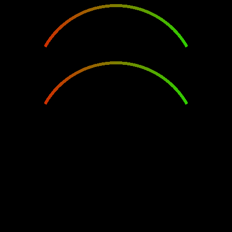
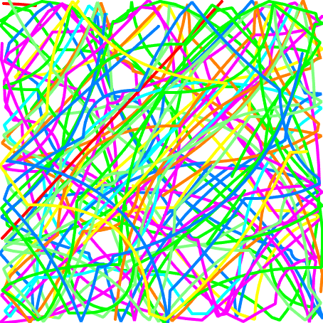
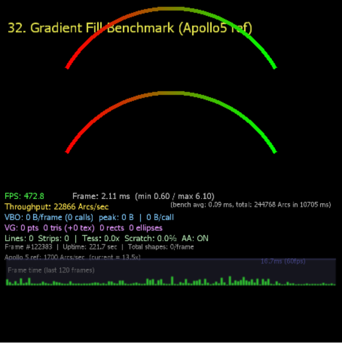
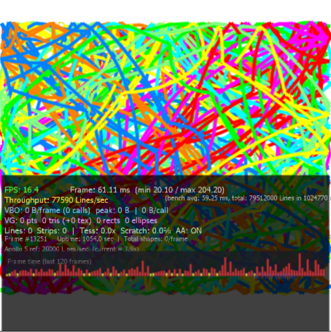
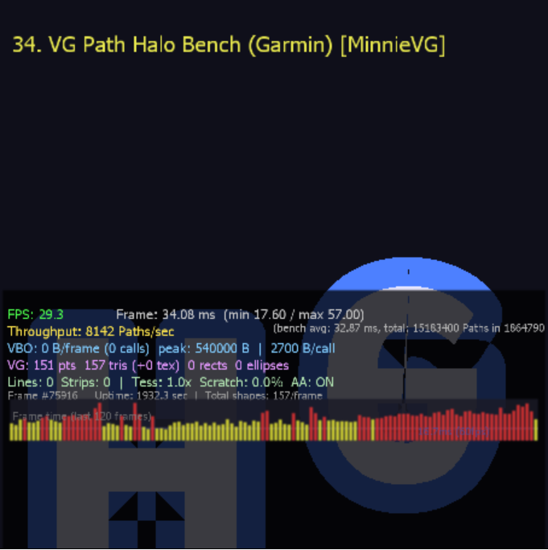

Chapter 1 Vector Graphics Solutions — Overview & Comparison
Vector Graphics Solutions — Overview & Comparison
NemaVG (Ambiq / ThinkSilicon) • TES D/AVE NX VG (Minnie/ShaderVG primary) — purpose, APIs, architecture, and examples
ThinkSilicon • Fixed-Function 2D GPU
Minnie/ShaderVG engine (primary)
1. What Is Vector Graphics?
Vector graphics describes images using mathematical primitives — paths, curves, shapes, gradients — rather than pixel grids. Instead of storing a 100×100 bitmap (40 KB at RGBA8), you store “draw a circle at (50,50) with radius 40 filled with a blue-to-green gradient” in a few dozen bytes. The GPU or CPU renders it at whatever resolution is needed.
Why It Matters for Embedded / Smartwatch UIs
Raster (Bitmap) Approach
- Every DPI variant needs a separate image asset
- Scaling causes pixelation or blur
- Animating a gauge means swapping sprite frames
- Asset storage grows with resolution²
- Color/theme changes require new image sets
Vector Graphics Approach
- One asset renders at any resolution
- Infinite scaling with perfect anti-aliasing
- Animating a gauge is changing one float (angle)
- Asset storage is typically 2–10 KB per icon
- Colors, gradients, stroke widths change at runtime
Core VG Concepts
| Concept | Description |
|---|---|
| Path | A sequence of MoveTo, LineTo, CubicTo, ArcTo commands — the fundamental drawing primitive |
| Fill | Filling the interior of a closed path with color, gradient, or texture pattern |
| Stroke | Drawing the outline of a path with a given width, cap style, and join style |
| Paint | A “brush” object that defines what to fill/stroke with: solid color, linear/radial/conical gradient, or texture |
| Gradient | A smooth color ramp defined by color stops at positions 0.0–1.0 |
| Transform | Affine matrix (translate, rotate, scale) applied to paths and/or paints |
| Fill Rule | How overlapping sub-paths determine inside/outside: even-odd or non-zero winding |
| Anti-Aliasing | Smoothing jagged edges — via MSAA, analytical edge-AA, or SDF fragment shaders |
| Tessellation | Converting curved paths into triangles the GPU can rasterize |
2. The Two VG Solutions
NemaVG Production
| Vendor | ThinkSilicon (Ambiq) |
| Version | 1.1.8 (changelog to 1.1.13) |
| License | Proprietary |
| Hardware | Apollo4/4B/4L/4P, Apollo510/510L, Apollo5a, Bronco |
| GPU Type | NemaP (Pico) fixed-function 2D / NemaPVG dedicated VG |
| Rendering | CPU tessellation → command lists → NemaP hardware |
| SVG Format | TSVG (proprietary binary, FlatBuffers) |
| Font Format | Pre-converted TTF → C arrays |
| Maturity | Shipping on production silicon |
TES D/AVE NX VG FPGA Prototype
| VG Engine | Minnie / ShaderVG (by Bastian Spiegel) |
| Engine License | MIT (Minnie/ShaderVG) |
| Hardware | D/AVE NX on Intel Stratix 10 / Arria 10 FPGA |
| GPU Type | Programmable shader GPU (GLES 2.0/3.0/3.2) |
| Rendering | GPU SDF shaders (point-sprite quads) + GL stencil for complex paths |
| SVG Format | .min / .mib binary (Minnie), 122 opcodes |
| Font Format | SDF fonts (TTF → SDF converter) |
| Maturity | 174 tested render modes (Minnie) |
3. Architecture Comparison
3.1 How Each Solution Renders a Shape
NemaVG — CPU Tessellation
nema_vg_draw_circle()nema_cl_submit(&cl) sends to GPUnema_cl_wait(&cl) blocks until doneTES D/AVE NX VG — GPU SDF Shader
smoothstep() + HW barycentrics (GL_TES_pointcoord_tri)3.2 Key Architectural Differences
| Aspect | NemaVG (Ambiq) | TES D/AVE NX VG (Minnie/ShaderVG) |
|---|---|---|
| Command Model | Command list: cl_create, cl_bind, cl_submit, cl_wait |
Immediate GLES draw calls within BeginFrame/EndFrame |
| Shape Rendering | CPU tessellation → triangle mesh | SDF shaders for primitives (1 vertex per shape); CPU tessellator for complex paths |
| Anti-Aliasing | Quality levels: BETTER, FASTER, MAXIMUM, NON_AA |
Hardware barycentrics (GL_TES_pointcoord_tri), SDF smoothstep, analytical edge-AA, MSAA via FBOs |
| Stencil Buffer | Required (GPU memory pool, ≥ framebuffer size) | Used for complex polygon fill only (basic shapes: not required) |
| API Style | Handle-based: NEMA_VG_PAINT_HANDLE, explicit type setters |
Native ShaderVG: global state, procedural () |
| Display Output | NemaDC display controller → DSI/SPI panel | EGL surface → DRM/KMS → HDMI/panel (or SDL2/WebGL via Minnie portability) |
4. API Comparison
4.1 Common Pattern: Paint + Shape → Draw
Both solutions follow the same conceptual model:
4.2 Paint Model Differences
| Aspect | NemaVG | TES D/AVE NX VG |
|---|---|---|
| Paint Object | Opaque handle (NEMA_VG_PAINT_HANDLE) |
Global state (procedural API) |
| Paint Type | Set explicitly: nema_vg_paint_set_type(paint, NEMA_VG_PAINT_GRAD_LINEAR) |
Implicit from mode function call |
| Color Format | nema_rgba(r8, g8, b8, a8) — 8-bit RGBA packed uint32 |
Float [0,1] RGBA components |
| Gradient Stops | Up to 32 stops (NEMA_VG_PAINT_MAX_GRAD_STOPS) |
Arbitrary (1D texture LUT) |
4.3 Shape Drawing Functions
| Shape | NemaVG |
|---|---|
| Circle | nema_vg_draw_circle(cx, cy, r, stroke, fill) |
| Ellipse | nema_vg_draw_ellipse(cx, cy, rx, ry, m, stroke, fill) |
| Rectangle | nema_vg_draw_rect(x, y, w, h, m, stroke, fill) |
| Rounded Rect | nema_vg_draw_rounded_rect(x, y, w, h, rx, ry, m, stroke, fill) |
| Ring/Arc | nema_vg_draw_ring(cx, cy, r, a0, a1, paint) |
| Line | nema_vg_draw_line(x0, y0, x1, y1, m, stroke, fill) |
| Custom Path | nema_vg_path_set_shape() + nema_vg_draw_path() |
4.4 Stroke Configuration
| Feature | NemaVG |
|---|---|
| Width | nema_vg_stroke_set_width(w) |
| Cap Style | nema_vg_stroke_set_cap_style(start, end) — Butt/Round/Square |
| Join Style | nema_vg_stroke_set_join_style(j) — Bevel/Miter/Round |
| Dash Pattern | nema_vg_stroke_set_dash_pattern(pat, n) |
| Miter Limit | nema_vg_stroke_set_miter_limit(l) |
5. Side-by-Side Code Examples
5.1 Drawing a Filled Circle with Solid Color
// Initialize
nema_init();
nema_vg_init(fb_w, fb_h);
NEMA_VG_PAINT_HANDLE paint = nema_vg_paint_create();
nema_cmdlist_t cl = nema_cl_create();
nema_cl_bind(&cl);
// Setup
nema_cl_rewind(&cl);
nema_bind_dst_tex(fb_phys, fb_w, fb_h, NEMA_RGBA8888, fb_stride);
nema_set_clip(0, 0, fb_w, fb_h);
nema_clear(nema_rgba(0x00, 0x00, 0x00, 0xff));
// Paint
nema_vg_paint_set_type(paint, NEMA_VG_PAINT_COLOR);
nema_vg_paint_set_paint_color(paint, nema_rgba(0xff, 0x00, 0xff, 0x80));
nema_vg_set_fill_rule(NEMA_VG_FILL_EVEN_ODD);
// Draw
nema_vg_draw_circle(160.f, 160.f, 80.f, NULL, paint);
// Submit
nema_cl_submit(&cl);
nema_cl_wait(&cl);// Initialize
// Setup
// Paint
// Present
// Initialize
// Frame
// State
// Draw (circle = ellipse with equal radii)
// Present
5.2 Drawing with a Linear Gradient
// Create gradient
NEMA_VG_GRAD_HANDLE grad = nema_vg_grad_create();
float stops[4] = {0.0f, 0.33f, 0.66f, 1.0f};
color_var_t colors[4] = { {255,0,0,255}, {0,255,0,255}, {0,0,255,255}, {255,255,0,255} };
nema_vg_grad_set(grad, 4, stops, colors);
// Assign gradient to paint
nema_vg_paint_set_type(paint, NEMA_VG_PAINT_GRAD_LINEAR);
nema_vg_paint_set_grad_linear(paint, grad, 0, 80, 0, 240,
NEMA_TEX_CLAMP | NEMA_FILTER_BL);
// Draw shape with gradient paint
nema_vg_draw_rounded_rect(40, 80, 240, 160, 20, 20, m_identity, NULL, paint);// Create gradient
float stops[4] = {0.0f, 0.33f, 0.66f, 1.0f};
// Assign gradient to paint
// Draw shape with gradient paint (internally calls ShaderVG gradient + round-rect SDF)
// Create gradient LUT texture (done once)
sU32 gradient_colors[4] = {0xFFff0000u, 0xFF00ff00u, 0xFF0000ffu, 0xFFffff00u};
sSI gradient_starts[4] = {0, 333, 666, 1000};
sU32 tex_data[256];
gradient_starts, 4, YAC_TRUE);
tex_data, 256*4);
// Set gradient paint mode
// Draw
5.3 Custom Path (Star Shape)
// Define path segments
uint8_t cmds[] = { NEMA_VG_PRIM_MOVE, NEMA_VG_PRIM_LINE, NEMA_VG_PRIM_LINE,
NEMA_VG_PRIM_LINE, NEMA_VG_PRIM_LINE, NEMA_VG_PRIM_CLOSE };
float data[] = { 160,40, 200,140, 280,140, 220,200, 240,300, 160,240 };
// Create and configure path
NEMA_VG_PATH_HANDLE path = nema_vg_path_create();
nema_vg_path_set_shape(path, 6, cmds, 12, data);
nema_matrix3x3_t m;
nema_mat3x3_load_identity(m);
nema_vg_path_set_matrix(path, m);
// Draw
nema_vg_set_fill_rule(NEMA_VG_FILL_EVEN_ODD);
nema_vg_draw_path(path, paint);// Procedural path construction (Minnie's full path API)
minBeginPathEvenOdd();
minMoveTo(160, 40);
minLineTo(200, 140);
minLineTo(280, 140);
minLineTo(220, 200);
minLineTo(240, 300);
minLineTo(160, 240);
minEndPathClosed();
// Fill + stroke
minFill();
minColor(0x80ff00ff); // ARGB
minDrawPath(pathId);6. Advantages of Vector Graphics
6.1 Theoretical Advantages
| Advantage | Description |
|---|---|
| Resolution Independence | Shapes scale to any display DPI without pixelation. One asset works on 240×240 and 466×466 smartwatch displays. |
| Smaller Asset Size | A complex SVG icon: 2–10 KB. Equivalent bitmap at multiple DPIs: 50–200 KB. Minnie’s .mib format achieves 4×–11× compression vs raw SVG. |
| Smooth Animation | Animating a parameter (angle, radius, position) is changing one float — no sprite sheets, no frame blending. |
| Built-in Anti-Aliasing | SDF/analytical AA produces smooth edges at sub-pixel accuracy without MSAA memory cost (4× framebuffer). |
| Dynamic Theming | Change gradient stops, stroke color, fill opacity at runtime with zero new assets. |
| Scalable Typography | Vector fonts render at any point size from a single data table. No need for pre-rendered bitmap font atlases at each size. |
6.2 Actual Advantages Demonstrated in This Codebase
| Advantage | Where It Shows Up | What It Replaces |
|---|---|---|
| Circular gauges with no bitmaps | nemagfx_vg_circular_bar (NemaVG) |
Would require N pre-rendered arc sprites at each angle increment |
| Single SVG scales to any display | nemagfx_vg_svg (NemaVG) |
Would require 1,000+ path tiger as a large bitmap at each resolution |
| Vector fonts at runtime size | nemagfx_vg_ttf (NemaVG — pre-converted TTF)ShaderVG SDF text (Minnie — native SDF fonts) |
Bitmap font atlases at each point size (12, 14, 16, 18, 24, 32…) |
| Gradient-filled shapes, zero textures | nemagfx_vg_paint (NemaVG) |
Pre-baked gradient images per shape/size/orientation |
| 174 render modes from one library | test_shadervg.c (Minnie native — same engine used by TES VG) |
Each combination of shape×paint×AA as a separate rendering codepath |
| Alpha masking without textures | nemagfx_vg_masking (NemaVG) |
Pre-rendered mask bitmaps |
6.3 Tradeoffs and Costs
| Cost | NemaVG (Ambiq) | TES D/AVE NX VG (Minnie/ShaderVG) |
|---|---|---|
| CPU tessellation | All paths tessellated on CPU — significant for complex SVGs on Cortex-M | Basic shapes: none (GPU SDF). Complex paths only: CPU tessellator (VG_tesselator) |
| Stencil buffer memory | Required (≥ framebuffer size). Can be large on constrained MCU | Used only for complex polygon fill; basic shapes do not need stencil |
| Asset pre-conversion | SVG → TSVG binary, TTF → C arrays (offline tools required) | SVG → .min/.mib (Minnie converter); TTF → SDF font (font_convert tool) |
| Fill quality on MCU | Non-zero winding has known quality issues on NemaP | N/A (programmable shader GPU with higher precision) |
| Fragment shader cost | N/A (fixed-function rasterizer) | Per-pixel SDF evaluation — more expensive than textured quad, but enables analytical AA |
7. Examples & Demos Map
7.1 NemaVG (Ambiq) Examples
| Demo | Location | What It Shows |
|---|---|---|
| VG Shape | boards/common5/examples/graphics/nemagfx_vg_shape/ |
Circle, ellipse, ring, rect, rounded rect, line with cycling paint types |
| VG Paint | boards/common5/examples/graphics/nemagfx_vg_paint/ |
Linear/radial/conical gradients, texture fills, path transforms |
| VG SVG | boards/common5/examples/graphics/nemagfx_vg_svg/ |
Tiger SVG in TSVG binary format |
| VG TTF | boards/common5/examples/graphics/nemagfx_vg_ttf/ |
Vector font rendering at arbitrary sizes |
| VG Circular Bar | boards/common5/examples/graphics/nemagfx_vg_circular_bar/ |
Smartwatch-style circular progress gauges |
| VG Masking | boards/common5/examples/graphics/nemagfx_vg_masking/ |
Alpha mask clipping |
| VG Test | boards/common5/examples/graphics/nemagfx_vg_test/ |
Consolidated VG test suite (8 sub-tests) |
| 2D + VG Suite | boards/common5/examples/graphics/nemagfx_tsuite2d_test_vg/ |
Combined 2D raster + VG test |
boards/common4/ for Apollo4/Apollo4P targets.
Additional ThinkSi SDK examples are in third_party/ThinkSi/NemaGFX_SDK/examples/NemaVG/.
7.2 TES D/AVE NX VG Examples
These demos run on the D/AVE NX FPGA using the Minnie/ShaderVG engine.
7.2.2 Native Minnie/ShaderVG Demos (Primary VG Path)
| Demo | Location | What It Shows |
|---|---|---|
| ShaderVG Test | tes_fpga_evalkit_sw/demos/nema_2_dave_shadervg_test/ |
15 Minnie ShaderVG render modes on D/AVE NX |
| AA Showcase | tes_fpga_evalkit_sw/demos/nema_2_dave_aa_showcase/ |
Analytical anti-aliasing demo |
| Tiger | tes_fpga_evalkit_sw/demos/nema_2_dave_tiger/ |
Procedural tiger with full edge AA |
7.2.3 Minnie Standalone (Cross-Platform)
| Demo | Location | What It Shows |
|---|---|---|
| Native C Tests | tks/minnie/native/test_shadervg.c |
174 test cases — every primitive, AA mode, gradient, pattern, text |
| TKS Scripted Tests | tks/minnie/tkminnie/tests/test_shadervg.tks |
Same 174 tests in TKS scripting language |
| MIB/MIN Tools | tks/minnie/tools/mib/ |
Binary vector image creation/rendering |
| Font Convert | tks/minnie/tools/font_convert/ |
TTF → SDF font pipeline |
| Screenshots | tks/minnie/screenshots/ |
43+ gallery images of all render modes |
8. Feature Matrix
| Feature | NemaVG (Ambiq) Prod | TES D/AVE NX VG (Minnie/ShaderVG) FPGA |
|---|---|---|
| Shapes | ||
| Rectangle | ✓ | ✓ |
| Rounded Rectangle | ✓ | ✓ |
| Circle | ✓ | ✓ (as ellipse with equal radii) |
| Ellipse | ✓ | ✓ |
| Ring / Arc | ✓ | ✓; via path natively |
| Line | ✓ | ✓ |
| Paths | ||
| Cubic Bézier | ✓ | ✓ (native ShaderVG) |
| Smooth Cubic (mirror) | ✓ | ✓ (native ShaderVG) |
| SVG Arc | ✓ | ✓ (native ShaderVG) |
| Sub-paths (holes) | ✓ | ✓ (native ShaderVG) |
| Paint | ||
| Solid Color | ✓ | ✓ |
| Linear Gradient | ✓ | ✓ |
| Radial Gradient | ✓ (some HW) | ✓ |
| Conical Gradient | ✓ | ✓ |
| Texture/Pattern Fill | ✓ | ✓ |
| LUT Palette | ✓ | ✗ |
| Stroke | ||
| Variable Width | ✓ | ✓ |
| Dash Pattern | ✓ | Pattern lines (native ShaderVG) |
| Miter Limit | ✓ | ✓ (native ShaderVG) |
| Text | ||
| Runtime Font Sizing | ✓ | ✓ (native ShaderVG) |
| Text Layout / Wrapping | ✓ | ✗ |
| Advanced | ||
| SVG Binary Format | ✓ (TSVG) | ✓ (.min/.mib — 122 opcodes) |
| Alpha Masking | ✓ | ✓ (stencil-based) |
| Scissor Clipping | ✓ | ✓ |
| FBO / Offscreen | N/A (cmd list) | ✓ |
| Gouraud-Shaded Triangles | ✗ | ✓ |
| Textured Triangles | ✗ | ✓ |
| Edge-AA Triangles | ✗ | ✓ (HW barycentrics on D/AVE NX; SW barycentrics elsewhere) |
| Platform | ||
| Embedded MCU | ✓ (Apollo4/510) | ✓ (D/AVE NX FPGA + FreeRTOS) |
| Desktop (PC/Mac) | ✓ (PC port) | ✓ (native Minnie via SDL2; D/AVE NX via Linux DRM) |
| Web (WebGL) | ✗ | ✓ (Emscripten — both D/AVE NX demos and Minnie standalone) |
9. Related Documentation
This overview document sits above the following detailed references. Each covers a specific aspect of the VG solutions or porting strategy in depth:
| Document | Scope | Location |
|---|---|---|
| Minnie VG — Comprehensive Analysis | Minnie architecture deep-dive: directory structure, Bézier handling, API design, render backends, 174 render modes, feature comparison vs NemaVG, suggested enhancements | doc/confdoc_generated.html |
| Minnie VG — Confluence Archive | Historical Confluence version of the Minnie analysis (deprecated) | doc/confdoc_current.html |
| Minnie Feature Audit | 88-feature capability audit across 12 categories: 72 YES, 5 PARTIAL, 11 NO | doc/minnie_feature_audit.md |
| Porting Guide: Ambiq → OpenGL ES | Procedural guide for porting NemaGFX/LVGL/NemaVG examples to GLES — directory mapping, GPU init, replacement calls, PC & web strategies | doc/porting_guide.html |
| TES D/AVE NX — Demo Architecture | Complete software stack for D/AVE NX: 847 demos, 1605 shaders, 7 demo categories, BAGL library, TES extensions, vertex formats, build system, FreeRTOS port | tes_fpga_evalkit_sw/demos/ |
| NemaVG → D/AVE NX Port | Detailed port documentation: architecture mapping, 3 optimizations (HW barycentrics, fat vertex, EGL abstraction), shader catalog, HW comparison. Primary guide for NemaVG → Minnie/ShaderVG porting with inline conversion examples. | tes_fpga_evalkit_sw/demos/nema_2_dave_common/ |
| Ambiq Examples — PC Simulation Port | Running Ambiq NemaGFX/NemaVG examples on desktop: platform stub headers, GPU kernel removal, NemaGFX→GLES translation, build status for all demos | tks/ambiq_graphics_examples/platform/pc/ |
| D/AVE NX — Emscripten/WebGL Port | tes_fpga_evalkit_sw/demos/ |
|
| Garmin VG Benchmark Tests | 3 Garmin graphics benchmarks (gradient fill, line draw, path halo) as native MinnieVG+ShaderVG demos with live performance HUD — FPS, throughput, VBO stats, 120-frame bar graph, Apollo 5 reference comparison. NemaVG-native gradient fill benchmark also available (gradient_fill_bench/main.c). |
tes_fpga_evalkit_sw/demos/nema_2_dave_common/ |
Chapter 2 MinnieVG Software Stack — Architecture & Abstraction Layers
MinnieVG Software Stack
Architecture & Abstraction Layers — from application code to GPU pixels
1. Overview & Purpose
This document provides a comprehensive, layer-by-layer guide to the MinnieVG + ShaderVG software stack as used in the Ambiq demo framework. It traces the full journey of a vector graphics draw call from high-level C application code down through CPU tessellation, GPU buffer management, GLSL shader selection, and final pixel output.
The stack is organized into 5 distinct layers, each with a single clear responsibility:
- OpenGL / GPU — raw hardware interface (GL calls, buffer management)
- ShaderVG — GPU rendering backend (110+ GLSL shader programs, draw-list execution)
- MinnieVG — CPU tessellation engine (~12K lines, path → triangles)
- Demo Common — convenience wrappers (frame bracket, paint, text)
- Demo Application — your drawing code
Plus Layer 4b: a built-in live Performance HUD that renders instrumentation as MinnieVG geometry through the same pipeline.
2. At a Glance
2.1 Architecture Diagram
2.2 Data Flow Summary
minMoveTo(), minLineTo(), minCubicTo() to describe vector geometryminDrawPath() runs the EvenOdd/NonZero tessellator, producing triangle vertices + a draw listmdemo_minnie_end_frame() calls glBufferData() to upload vertices to the GPUminExecDrawListEx() iterates the draw list, selects the correct shader program per primitive, and passes the current mvp_matrix as a GPU uniform (deferred transform application — see §6.4)glDrawArrays() executes; vertex & fragment shaders produce final pixels3. Layer 1: OpenGL / GPU
The lowest layer is the raw hardware interface. Demo code never calls GL functions directly
(except during the VBO upload in mdemo_minnie_end_frame()). All GL interaction is mediated
by ShaderVG (Layer 2).
3.1 GL API Surface Used
| Category | GL Functions | Called By |
|---|---|---|
| Shader Management | glCreateShader, glShaderSource, glCompileShader,
glCreateProgram, glAttachShader, glLinkProgram,
glUseProgram |
ShaderVG startup + draw dispatch |
| Buffer Objects | glGenBuffers, glBindBuffer, glBufferData |
Demo Common (VBO upload) |
| Vertex Attributes | glVertexAttribPointer, glEnableVertexAttribArray |
ShaderVG draw dispatch |
| Drawing | glDrawArrays (GL_TRIANGLES, GL_TRIANGLE_FAN, GL_LINES) |
ShaderVG draw dispatch |
| State | glBlendFunc, glEnable(GL_BLEND), glScissor,
glViewport, glClear |
ShaderVG + Demo Common |
| Textures | glGenTextures, glBindTexture, glTexImage2D,
glTexParameteri |
ShaderVG (gradient LUTs, pattern textures, SDF font atlas) |
| Uniforms | glGetUniformLocation, glUniform1f, glUniform2f,
glUniform4f, glUniformMatrix4fv |
ShaderVG (per-shape parameters) |
mdemo_minnie_end_frame(), which bridges Layers 3→1.
4. Layer 2: ShaderVG (GPU Rendering Backend)
ShaderVG is the GPU rendering backend that owns all GLSL shader programs and translates
MinnieVG’s CPU-generated vertex buffers + draw lists into actual GPU draw calls. It lives in
tks/minnie/shadervg/.
4.1 The 110+ Shader Programs
Every shader file follows a strict naming convention:
{Shape}{DrawMode}AA{Paint}{VBOFormat}.h
Shape: Rect | Ellipse | RoundRect | Triangles | LineStrip | Lines | Points
DrawMode: Fill | Stroke | FillStroke
Paint: (solid) | Linear | Radial | Conic | Pattern | PatternAlpha |
PatternDecal | PatternDecalAlpha
VBOFormat: (default) | 32 | 14_2This combinatorial structure yields the full shader catalog:
| Category | Count | Examples |
|---|---|---|
| SDF Shapes (Rect/Ellipse/RoundRect) | 72 | RectFillAA.h, EllipseFillAARadial.h, RoundRectStrokeAAConic.h |
| Triangles (tessellated polys) | 18 | TrianglesFillFlat32.h, TrianglesFillGouraud32.h, TrianglesFillTexAA32.h |
| Lines & Strokes | 30+ | LineStripFlatAA32.h, LineStripGouraudAA32.h, LineStripPatternAA32.h |
| Points | 4 | PointsSquareAA32.h, PointsRoundAA32.h, PointsRoundGouraudAA32.h |
| Total: ~110+ shader programs | Each contains paired vertex + fragment shader as C string literals | |
smoothstep(edge - aa_range, edge, distance) — per-pixel, no MSAA or tessellation subdivision needed.
4.2 Shader Compilation Pipeline
RectFillAA constructor defines vs_src and fs_src as C string literals in the header fileonOpen() — calls createShapeShader(vs_src, fs_src) which delegates to ShaderVG_Shader::create()FixShaderSourceVert() / FixShaderSourceFrag() — text-replace portable keywords (ATTRIBUTE, VARYING_OUT, FRAGCOLOR, TEXTURE2D) for the target GL profileglCreateShader() → glShaderSource() → glCompileShader() for VS & FSglCreateProgram() → glAttachShader() ×2 → glLinkProgram()validateShapeShader() — resolve uniform locations (u_transform, u_center, u_size, u_color_fill, u_aa_range, etc.)glUseProgram() and set uniforms per-shapesBool ShaderVG_Shader::create(const char *_sVert, const char *_sFrag) {
YAC_String sVert, sFrag, *sVertFix, *sFragFix;
sVert.visit(_sVert); sFrag.visit(_sFrag);
sVertFix = YAC_New_String(); sFragFix = YAC_New_String();
// Step 3: keyword replacement for GL profile compatibility
FixShaderSourceVert(&sVert, sVertFix);
FixShaderSourceFrag(&sFrag, sFragFix);
// Step 4: GL compile
sUI vpId = glCreateShader(GL_VERTEX_SHADER);
glShaderSource(vpId, 1, &sVertFixChars, NULL);
glCompileShader(vpId);
sUI fpId = glCreateShader(GL_FRAGMENT_SHADER);
glShaderSource(fpId, 1, &sFragFixChars, NULL);
glCompileShader(fpId);
// Step 5: GL link
prg_id = glCreateProgram();
glAttachShader(prg_id, vpId);
glAttachShader(prg_id, fpId);
glLinkProgram(prg_id);
glDeleteShader(vpId);
glDeleteShader(fpId);
return ret;
}4.3 GL Profile Abstraction
Shaders are written once using portable macros that are text-replaced at compile time to match the target GL profile. This is the key to MinnieVG’s cross-platform shader compatibility:
| Shader Keyword | GL 2.x / GLES 2.0 / WebGL 1 | GL 3+ / GLES 3+ / WebGL 2 |
|---|---|---|
ATTRIBUTE | attribute | in |
VARYING_OUT | varying | out |
VARYING_IN | varying | in |
FRAGCOLOR | gl_FragColor | o_Color (with out vec4 o_Color;) |
TEXTURE2D | texture2D | texture |
TEX_ALPHA | .a | .r (R8 textures) |
| Profile | bV3 | bGLES | Version String |
|---|---|---|---|
| Desktop GL 2.x | false | false | #version 120 |
| Desktop GL 4.x Core | true | false | #version 410 core |
| GLES 2.0 / WebGL 1.0 | false | true | #version 100 |
| GLES 3.x / WebGL 2.0 | true | true | #version 300 es |
FixShaderSourceVert() /
FixShaderSourceFrag() which do string find-replace on the source before passing to glShaderSource().
4.4 Key ShaderVG Functions
| Function | Layer | Purpose |
|---|---|---|
| L2 | Compile all 110+ shader programs at startup | |
minExecDrawListEx() |
L2 | Read MinnieVG draw list, select shader per primitive, bind VBO, issue glDrawArrays |
| L2 | Immediate-mode SDF rectangle (1 quad, analytic AA in fragment shader) | |
| L2 | Immediate-mode anti-aliased line strip rendering | |
| L2 | Render SDF text glyphs from pre-baked bitmap font atlas | |
| L2 | Convert color stops → 1D RGBA gradient texture for paint shaders | |
| L2 | Select GL profile for shader keyword replacement |
5. Layer 3: MinnieVG (CPU Tessellation Engine)
MinnieVG is a single-header C engine (minnie.h, ~12,826 lines) that converts
vector path commands into triangle vertex buffers and a draw list. It runs entirely on the CPU —
no GPU involvement until the output is handed to ShaderVG.
5.1 Path Construction API
The path API uses an immediate-mode, stateful pattern. You set state (color, fill mode, stroke width), then build a path from segments, then trigger tessellation:
minBegin(); // Reset internal state
minColor(0xFFE6E6FF); // Set fill color (ARGB32)
minFill(); // Fill mode (vs stroke)
minBeginPathEvenOdd(); // Start path, EvenOdd fill rule
minMoveTo(197.7f, 280.0f); // Move pen
minLineTo(154.3f, 280.0f); // Line segment
minLineTo(154.3f, 230.0f); // Line segment
minCubicTo(cx1, cy1, cx2, cy2, x, y); // Cubic Bézier curve
// ... more segments ...
minEndPath(1 /*closed*/); // Finalize path contour
minDrawPath(1); // Tessellate & write to vertex buffer + draw list
minEnd(); // Finalize all output| Function | Purpose |
|---|---|
minBegin() | Reset tessellator state, clear vertex/draw-list cursors |
minColor(argb32) | Set fill color as 32-bit ARGB |
minFill() / minStroke() | Select fill or stroke draw mode |
minStrokeWidth(w) | Set stroke width in pixels |
minBeginPathEvenOdd() | Start path with EvenOdd fill rule tessellator |
minBeginPathNonZero() | Start path with NonZero winding fill rule |
minMoveTo(x, y) | Move pen to absolute position |
minLineTo(x, y) | Line segment to absolute position |
minQuadTo(cx, cy, x, y) | Quadratic Bézier curve |
minCubicTo(cx1, cy1, cx2, cy2, x, y) | Cubic Bézier curve |
minArcTo(...) | Elliptical arc segment |
minEndPath(closed) | Finalize point list; if closed, connects last→first |
minDrawPath(mode) | Tessellate path into triangles; append to vertex buffer + draw list |
minEnd() | Finalize all output; vertex buffer & draw list are ready for GPU upload |
5.2 Tessellation Engine
When minDrawPath() is called, MinnieVG runs a CPU tessellation pass that converts the
path’s control points into a triangle mesh. Two fill-rule modes are supported:
EvenOdd Fill Rule
- Uses SGI-derived tessellator (
VG_tesselator/) - A point is “inside” if a ray crosses an odd number of path edges
- Robust, widely compatible, no winding issues
- Standard choice for most VG rendering
NonZero Winding Rule
- Counts winding direction of edge crossings
- Point is “inside” if net winding ≠ 0
- Needed for some SVG/OpenVG content
- May produce different results than EvenOdd for self-intersecting paths
Curve segments (cubic Béziers, arcs) are flattened into polyline approximations before tessellation. The flattening tolerance controls the trade-off between visual quality and vertex count.
5.3 Draw List & Vertex Buffer Format
MinnieVG’s output is a pair of buffers that ShaderVG consumes:
| Buffer | Variable | Contents | Format |
|---|---|---|---|
| Vertex Buffer | s_min_buf_gl[] |
Triangle vertices from tessellation | Interleaved: position (x,y) + color (RGBA) per vertex; 32 bytes/vertex in AA mode |
| Draw List | s_min_buf_draw[] |
Draw commands referencing vertex ranges | Each entry: shader ID + vertex offset + vertex count + state (blend, paint, etc.) |
minBegin(), the demo common layer sets the
export targets via minSetVertexBufferExportOFS(&buf) and minSetDrawListExportOFS(&buf).
This tells MinnieVG where to write its output.
6. Layer 4: Demo Common (Convenience Wrappers)
The minnie_demo_common.h header (~1,094 lines) provides the glue layer between
MinnieVG’s CPU tessellation and ShaderVG’s GPU rendering. It manages the per-frame lifecycle,
transform state stack, and provides convenience wrappers for common operations.
6.1 Frame Bracket
Every frame in a MinnieVG demo follows this bracket pattern:
mdemo_minnie_begin_frame(); // Set up vertex & draw-list export targets
// minSetVertexBufferExportOFS(&s_min_buf_gl)
// minSetDrawListExportOFS(&s_min_buf_draw)
// minBegin()
// ─── Application drawing (Layer 5) ───
minColor(fill_color);
minFill();
minBeginPathEvenOdd();
// ... path construction ...
minDrawPath(1);
mdemo_minnie_end_frame(); // Finalize & flush to GPU:
// minEnd()
// glBindBuffer(GL_ARRAY_BUFFER, vbo)
// glBufferData(..., vertices, GL_DYNAMIC_DRAW)
// minExecDrawListEx(&drawlist, vbo)
// s_vbo_bytes_accum += byte_count
// s_draw_call_accum += draw_count6.2 Paint & Text Helpers
| Function | Purpose |
|---|---|
mdemo_draw_rect(x, y, w, h, color) | Fill a rectangle (uses ) |
mdemo_draw_text(x, y, text, paint) | Render SDF text string |
mdemo_draw_line(x1, y1, x2, y2, w, color) | Draw a line with stroke width |
mdemo_clear(r, g, b, a) | Clear framebuffer |
mdemo_swap() | Swap front/back buffers |
mdemo_label(section_name) | Draw section label overlay |
mdemo_create_paint_linear(...) | Create a linear gradient paint object |
mdemo_create_paint_radial(...) | Create a radial gradient paint object |
6.3 Transform State & Stack
| Function | What It Does |
|---|---|
mdemo_set_transform_identity() |
Reset mvp_matrix to the default orthographic projection: Ortho(0, W, H, 0, 0, 10) |
mdemo_save() |
Push current mvp_matrix and stroke_width onto the state stack |
mdemo_restore() |
Pop and overwrite mvp_matrix and stroke_width from the state stack |
mdemo_translate(tx, ty) |
Post-multiply a translation onto mvp_matrix via minnie_matrix4f_translatef() |
mdemo_scale(sx, sy) |
Post-multiply a scale onto mvp_matrix via minnie_matrix4f_scalef() |
mdemo_rotate(deg) |
Post-multiply a Z-axis rotation onto mvp_matrix |
These transforms affect geometry at GPU render time, not during CPU tessellation.
minDrawPath() tessellates vertices in world space (mode=0, no transform).
The mvp_matrix is read later when the draw list is executed by minExecDrawListEx()
and passed as a uniform to the vertex shader.
6.4 Deferred Rendering Pitfall: Restore-Before-Execute
mdemo_restore() must be called after
mdemo_minnie_end_frame(), not before it. MinnieVG uses a deferred rendering
architecture: minDrawPath() only records draw commands; the actual GPU draw happens
inside mdemo_minnie_end_frame() → minExecDrawListEx(), which reads the
current value of mvp_matrix at that moment. If you restore the matrix before
executing the draw list, the transform is silently discarded.
✗ Wrong (transform lost)
mdemo_minnie_begin_frame();
mdemo_save();
mdemo_translate(pan_x, pan_y);
mdemo_scale(zoom, zoom);
minDrawPath(pid); // record only
mdemo_restore(); // ← matrix reverted!
mdemo_minnie_end_frame(); // GPU draws with RESTORED matrix
// (no translate/scale applied)✓ Correct (transform applied)
mdemo_minnie_begin_frame();
mdemo_save();
mdemo_translate(pan_x, pan_y);
mdemo_scale(zoom, zoom);
minDrawPath(pid); // record only
mdemo_minnie_end_frame(); // GPU draws with CURRENT matrix
// (translate+scale in effect)
mdemo_restore(); // safe to restore AFTER executeThis matters whenever transforms are applied within a begin_frame/end_frame bracket.
The two-phase architecture is:
| Phase | Function | MVP Matrix Role |
|---|---|---|
| 1. Record | minDrawPath() |
Not read — vertices tessellated in world space |
| 2. Execute | mdemo_minnie_end_frame() → minExecDrawListEx() → |
Read as GPU uniform — must still contain desired transform |
7. Layer 4b: Performance Tracking & HUD
Built into minnie_demo_common.h, the performance HUD is a self-contained instrumentation
system that renders live metrics as MinnieVG geometry every frame. It uses the same
Layer 3→2→1 pipeline as the benchmarks themselves.
7.1 The mdemo_perf_t Structure
typedef struct {
double frame_times[120]; // 120-frame rolling history (ms)
int frame_idx; // Current ring-buffer index
int frame_count; // Total frames recorded
double bench_start_time; // Benchmark-only start timestamp
double bench_elapsed_ms; // Last benchmark draw time
int bench_item_count; // Items drawn in last bench pass
unsigned vbo_bytes; // VBO bytes uploaded this frame
unsigned draw_calls; // GL draw calls this frame
unsigned vbo_bytes_peak; // Peak VBO bytes seen
double frame_start_time; // Wall-clock frame start
double frame_elapsed_ms; // Total frame time
} mdemo_perf_t;The instrumentation API:
| Function | When Called | What It Does |
|---|---|---|
mdemo_perf_frame_begin() |
Start of frame | Record wall-clock start time; reset VBO/draw-call counters |
mdemo_perf_bench_begin() |
Before benchmark drawing | Record benchmark-only start time |
mdemo_perf_bench_end(items) |
After benchmark drawing | Record elapsed draw time; store item count for throughput calculation |
mdemo_perf_frame_end() |
End of frame | Record total frame time; push into rolling history buffer |
VBO byte and draw-call counters are automatically accumulated by mdemo_minnie_end_frame()
via static counters (s_vbo_bytes_accum, s_draw_call_accum).
7.2 HUD Panel Rendering
mdemo_draw_perf_panel() renders a semi-transparent overlay displaying:
Numeric Metrics
- FPS — frames per second (average over 120-frame window)
- Frame time — avg / min / max in milliseconds
- Throughput — domain units/sec (arcs/sec, lines/sec, paths/sec)
- VBO bytes/frame — tessellation output size
- Draw calls — GL draw call count
- Peak VBO — maximum vertex buffer usage observed
- Apollo 5 ratio — hardware reference comparison
WebGL JS HUD (v2) adds:
- GPU time — via
EXT_disjoint_timer_query_webgl2 - Triangles/sec, Vertices/sec — geometry throughput
- Est. fill rate — Mpx/sec heuristic
- Stencil ops — clip path / fill rule state changes
- Scissor changes — rectangular clip rect updates
- Clear calls — per-frame
glClearcount - Uniform uploads — per-draw-call parameter transfers
- Blend switches — alpha blending mode changes
- Overdraw est. — pixel overdraw ratio (red >4x)
See WEBGL_DEBUG_REPORT §18 for detailed metric definitions.
Visual Elements
- Dark background — semi-transparent rectangle behind metrics
- SDF text — all text rendered via ShaderVG font atlas
- 120-bar graph — frame-time history, color-coded:
- Green ≤16.7ms (60 FPS target)
- Yellow 16.7–33ms
- Red >33ms
- Reference line — horizontal line at 16.7ms (60 FPS) threshold
8. Layer 5: Demo Application (Your Code)
The topmost layer is your actual drawing code. A typical MinnieVG demo section implements an
onDraw() callback that uses the layers below:
static void minnie_demo_32_draw(void) {
mdemo_clear(0.12f, 0.12f, 0.15f, 1.0f); // Layer 4: clear
mdemo_perf_frame_begin(); // Layer 4b: start timing
mdemo_minnie_begin_frame(); // Layer 4: buffer setup
mdemo_perf_bench_begin(); // Layer 4b: bench start
for (int i = 0; i < NUM_ARCS; i++) {
draw_arc_direct(...); // Layer 3: MinnieVG paths
}
mdemo_perf_bench_end(NUM_ARCS); // Layer 4b: bench end
mdemo_draw_perf_panel(s_paint, &s_perf, ...); // Layer 4b: render HUD
mdemo_minnie_end_frame(); // Layer 4: flush to GPU
mdemo_perf_frame_end(); // Layer 4b: finalize stats
mdemo_label("32 - Garmin Arc Benchmark"); // Layer 4: section label
mdemo_swap(); // Layer 4: present frame
}The application code operates exclusively at Layer 3+ level. It never touches GL functions, shader programs, or VBO management. The only API surface it uses:
| From Layer | Functions Used |
|---|---|
| L4 Demo Common | mdemo_clear, mdemo_minnie_begin/end_frame, mdemo_save/restore, mdemo_translate/scale, mdemo_label, mdemo_swap |
| L4b Perf HUD | mdemo_perf_frame_begin/end, mdemo_perf_bench_begin/end, mdemo_draw_perf_panel |
| L3 MinnieVG | minColor, minFill, minStroke, minBeginPath*, minMoveTo, minLineTo, minCubicTo, minArcTo, minEndPath, minDrawPath |
9. End-to-End Call Traces
9.1 Drawing the “H” Path
A concrete trace of a single filled path from application code through all 5 layers to GPU pixels:
draw_path_direct() ← Layer 5: demo code
├─ mdemo_minnie_begin_frame() ← Layer 4: buffer setup
│ ├─ minSetVertexBufferExportOFS(&buf) ← Layer 3: set vertex buffer target
│ ├─ minSetDrawListExportOFS(&buf) ← Layer 3: set draw list target
│ └─ minBegin() ← Layer 3: reset tessellator
│
├─ minColor(0xFFE6E6FF) ← Layer 3: set fill color
├─ minFill() ← Layer 3: fill mode
├─ minBeginPathEvenOdd() ← Layer 3: start path
├─ minMoveTo(197.7, 280.0) ← Layer 3: move pen
├─ minLineTo(154.3, 280.0) ← Layer 3: line segment
├─ ... (12 more LineTo + Close) ...
├─ minEndPath(1 /*closed*/) ← Layer 3: finalize contour
├─ minDrawPath(1) ← Layer 3: tessellate
│ └─ EvenOdd tessellator runs ← Layer 3: CPU → triangles
│ ├─ writes vertices to s_min_buf_gl ← Layer 3: vertex buffer output
│ └─ writes draw cmd to s_min_buf_draw← Layer 3: draw list output
│
└─ mdemo_minnie_end_frame() ← Layer 4: flush to GPU
├─ minEnd() ← Layer 3: finalize output
├─ glBindBuffer(GL_ARRAY_BUFFER, vbo) ← Layer 1: bind VBO
├─ glBufferData(..., vertices, ...) ← Layer 1: upload triangles
└─ minExecDrawListEx(&drawlist, vbo) ← Layer 2: ShaderVG dispatch
├─ reads current mvp_matrix ← Layer 2: deferred transform!
├─ glUseProgram(trisFlatAAShader) ← Layer 1: select shader
├─ glUniformMatrix4fv(mvp_matrix) ← Layer 1: upload MVP as uniform
├─ glVertexAttribPointer(...) ← Layer 1: bind vertex format
└─ glDrawArrays(GL_TRIANGLES, ..) ← Layer 1: GPU rasterizes
9.2 Performance HUD Call Trace
The HUD overlay is rendered through the same pipeline, demonstrating self-hosting:
mdemo_perf_frame_begin() ← start timer, reset VBO counters
mdemo_perf_bench_begin() ← start bench-only timer
minDrawArc() / minDrawLine() / ... ← Layer 3: benchmark drawing
mdemo_perf_bench_end(item_count) ← stop bench timer, accumulate throughput
mdemo_draw_perf_panel(paint, ...) ← render HUD overlay (Layers 3→2→1)
├─ mdemo_draw_rect() (dark background) ← semi-transparent panel background
├─ mdemo_draw_text("FPS: 60.0") ← SDF text via ShaderVG
├─ mdemo_draw_text("Throughput: ...") ← throughput stats
├─ mdemo_draw_text("VBO: ... bytes") ← tessellation metrics
├─ mdemo_draw_line(ref_line) ← 16.7ms reference line
└─ mdemo_draw_rect() × 120 ← frame-time bar graph
mdemo_perf_frame_end() ← finalize stats, update rolling history
10. Component Summary
10.1 MinnieVG vs ShaderVG
| Attribute | MinnieVG (Layer 3) | ShaderVG (Layer 2) |
|---|---|---|
| Role | CPU tessellation engine | GPU rendering backend |
| Input | Vector path commands (moveTo, lineTo, cubicTo, arcTo, ...) | Vertex buffers + draw list from MinnieVG |
| Output | Triangle vertex buffer + draw command list | Pixels on screen via GLSL shader programs |
| Runs On | CPU | GPU (OpenGL / OpenGL ES / WebGL) |
| Primary File | minnie.h (~12,826 lines, single header) |
shadervg.cpp (~7,310 lines) + 110+ shader headers |
| AA Method | Triangle edges (tessellated polygon boundaries) | Analytic SDF + smoothstep() per-pixel |
| Shape Support | Arbitrary paths (fill + stroke) | SDF primitives (rect, ellipse, roundrect) + tessellated triangles + lines + points |
10.2 Layer Responsibility Matrix
| Layer | Component | Responsibility | Key Files |
|---|---|---|---|
| L1 | OpenGL / GPU | Hardware rasterization, buffer management, shader execution | GL driver (system) |
| L2 | ShaderVG | Shader compilation, draw-list dispatch, SDF shape rendering, gradients, text | shadervg.cpp, Shader.cpp, Shape.cpp, text.cpp, 110+ *.h shaders |
| L3 | MinnieVG | Path construction, CPU tessellation (EvenOdd / NonZero), curve flattening, stroke expansion | minnie.h, VG_tesselator/, minnie_exec.h |
| L4 | Demo Common | Frame bracket, VBO upload, transform state stack (save/restore/translate/scale), paint management, text helpers, swap | minnie_demo_common.h |
| L4b | Performance HUD | Frame timing, throughput tracking, VBO/draw-call counting, HUD overlay rendering | minnie_demo_common.h (mdemo_perf_t) |
| L5 | Demo Application | Application-specific drawing logic and benchmark implementations | minnie_demo_??_*.c |
glDrawArrays. Five layers, each with a single clear responsibility.
11. References & File Index
11.1 MinnieVG / ShaderVG Source Files
| File | Lines | Purpose |
|---|---|---|
tks/minnie/minnie.h | 12,826 | Full MinnieVG engine (single header) |
tks/minnie/shadervg/shadervg.h | 3,528 | ShaderVG public API |
tks/minnie/shadervg/shadervg.cpp | 7,310 | Implementation + GL profile abstraction |
tks/minnie/shadervg/Shader.h/.cpp | Shader compile/link (ShaderVG_Shader class) | |
tks/minnie/shadervg/Shape.h/.cpp | Base class for SDF shapes (ShaderVG_Shape) | |
tks/minnie/shadervg/text.h/.cpp | Font / SDF text rendering | |
tks/minnie/shadervg/RectFillAA.h | Rectangle SDF shader (+ 16 paint variants) | |
tks/minnie/shadervg/EllipseFillAA.h | Ellipse SDF shader (+ 16 paint variants) | |
tks/minnie/shadervg/RoundRectFillAA.h | Round-rect SDF shader (+ 16 paint variants) | |
tks/minnie/native/test_shadervg.c | 4,634 | 174 render mode test harness |
tks/minnie/VG_tesselator/ | SGI-derived tessellator for complex polygon fill | |
tks/minnie/minnie_exec.h | 608 | Draw-list execution engine |
11.2 Demo Framework Files
| File | Purpose |
|---|---|
nema_2_dave_common/src/minnie_demo_common.h | Demo common layer: frame bracket, VBO upload, paint/text helpers, performance HUD |
nema_2_dave_common/src/minnie_demo_sections/minnie_demo_32_*.c | Garmin Arc Benchmark (MinnieVG direct port) |
nema_2_dave_common/src/minnie_demo_sections/minnie_demo_33_*.c | Garmin Line Grid Benchmark (MinnieVG direct port) |
nema_2_dave_common/src/minnie_demo_sections/minnie_demo_34_*.c | Garmin Path Halo Benchmark (MinnieVG direct port) |
nema_2_dave_common/src/minnie_demo_sections/minnie_demo_35_map_simple.c | Austin Map — Simple (roads only, pan/zoom) |
nema_2_dave_common/src/minnie_demo_sections/minnie_demo_36_map_medium.c | Austin Map — Medium (roads + parks + water) |
nema_2_dave_common/src/minnie_demo_sections/minnie_demo_37_map_complex.c | Austin Map — Complex (full detail, buildings) |
11.3 Related Documentation
| Document | Location |
|---|---|
| VG Feature & Shader Analysis (MinnieVG vs NemaPVG) | doc/vg_shader_feature_analysis.html |
| Garmin VG Benchmarks | doc/GARMIN_VG_BENCHMARKS.html |
| MinnieVG → NemaVG Implementation Log | doc/minnie_nemavg_implementation_log.html |
| VG Solutions Overview (NemaVG vs TES D/AVE NX) | doc/vector_graphics_overview.html |
| MinnieVG Feature Audit (88 features, 12 categories) | doc/minnie_feature_audit.md |
| Porting Guide: Ambiq → OpenGL ES | doc/porting_guide.html |
| NemaVG Transforms & Matrix Math | doc/vg_transforms_matrix.html |
| dvg_* API → MinnieVG Equivalence Analysis |
Chapter 3 MinnieVG Comprehensive Technical Analysis
(Updated February 23, 2026 — reconciled with minnie.html reference documentation and source code audit)
Version History
Version 8 — February 23, 2026
Reconciled with minnie.html reference documentation and full source code audit of tks/minnie/.
Sections added:
3. Formats and Bytecode — .min/.mib pipeline, 122 opcodes, SVG compression ratios (4x–11x)
6. Render Backends and Performance — Software rasterizer, GPU backend, AA codepaths, benchmarks (17K fps M2 Pro, 83K fps 1080 TI)
Sections updated:
1. Architecture Overview — Added MIB VM architecture, software rasterizer option, MIT license, 2D/2.5D designation
2. Directory Structure — Expanded shadervg (115+ files, all paint types), corrected minnie.h (single-header), added native/ (174 tests)
7. Feature Comparison — Populated the entire MinnieVG column (previously empty) with Yes/No/Partial and source evidence. Added "Additional Minnie Features Not Present in NemaVG"
8. Suggested Enhancements — Removed 3 incorrect suggestions (texture/gradient fills, fill rules, path abstraction already exist in codebase). Replaced with 7 verified gaps: quadratic Bézier, ring primitive, runtime SVG, variable dash arrays, Unicode, text alignment, dynamic curve subdivision
1. Architecture Overview
Minnie is a powerful and well-designed 2D / 2.5D vector graphics rendering engine, distributed under the MIT license (Copyright 2018-2026 by bsp). It adopts a layered architecture, decomposing complex rendering tasks into independent, maintainable modules. Its core capability lies in efficiently converting vector paths into high-quality, anti-aliased pixel images.
The engine processes a size-optimized bytecode stream (.mib) which is either generated on-the-fly in RAM, read from flash / mass storage, or converted from a human-readable ASCII file format (.min), which in turn can be converted from SVG files via an offline preprocessor.
The core runtime consists of a single C++ header file (minnie.h) which can optionally be linked with the SGI tesselator to support complex concave paths with holes (even-odd fill rule). An optional antialiased software rasterizer is also included for embedded targets without GPU acceleration.
Overall Workflow
Asset Preparation (Offline): Developers use tools in the tools/ directory to preprocess standard vector files (e.g., SVG) and fonts (TTF). SVG files are first converted to the human-readable .min ASCII format via svg_loader, then compiled to the engine's proprietary, size-optimized binary format (.mib). The .mib format achieves 4x–11x compression ratios compared to SVG (e.g., tiger.svg 96 KB → tiger.mib 17 KB, a 1:6 ratio).
Loading and Parsing (Runtime): The Minnie core library loads .mib streams or receives programmatic drawing instructions through its C++ API (min* functions). The .mib bytecode is interpreted by a VM-like state machine with 122 defined opcodes controlling paths, transforms, colors, strokes, fills, clipping, framebuffers, and blits.
Geometry Processing (Runtime): This is the core step of converting abstract paths into GPU-renderable shapes. Depending on the drawing instruction, Minnie employs two distinct strategies:
For Filled Paths: If a complex path (e.g., a concave polygon or a shape with holes) needs to be filled, the task is delegated to the VG_tesselator module. This module uses advanced tessellation algorithms to precisely decompose the shape's interior into a series of simple triangles.
For Stroked Paths: Since a GPU cannot directly draw a line with thickness, the Minnie core must first calculate the extruded geometry of the stroke itself. This process "extrudes" the path outwards on both sides to construct a new, ribbon-like polygon representing the "thick line," complete with geometry for line joins (round, bevel, miter) and line caps (butt, round, square). This new polygon is then sent for tessellation.
Instruction Generation (Runtime): The Minnie core compiles all drawing operations (e.g., "draw this batch of triangles," "set color to red") into an efficient, linear Draw List.
Render Execution (Runtime): A MinnieDrawable object executes the draw list, iterating through each instruction and calling the shadervg low-level renderer to execute the corresponding OpenGL commands. Alternatively, the antialiased software rasterizer (tri_aa / tri_aa_fx) can be used for embedded targets.
2. Directory Structure and Functional Details
VG_tesselator/ - Path Tesselator
Functionality: The geometric computation core of the engine, responsible for converting arbitrarily complex outlines into simple triangles. It embeds a highly optimized version of the classic SGI GLU Tesselator.
Responsibilities: Acts as a "translator" for the GPU by taking complex polygon outlines as input and intelligently outputting a series of non-overlapping triangles that perfectly fill the outline.
Capabilities: Reliably handles various "pathological" geometric situations:
Concave Polygons: Shapes with "dents" or "notches."
Polygons with Holes: For example, the shape of a donut. Enabled via the HAVE_VGTESSELATE build option.
Self-Intersecting Polygons: Can correctly determine the interior and exterior regions of intersecting paths according to a specified Winding Rule.
Implementation: Its core is a robust Sweep-line algorithm (sweep.c). Paths are declared with different opcodes depending on complexity:
p <id> — convex or stroked paths (simple)
pt <id> — concave paths without holes (ear-clipping tesselator)
ph <id> — concave even-odd paths with holes (SGI tesselator)
shadervg/ - Low-Level Renderer (115+ shader header files)
Functionality: A GLSL shader-based 2D graphics library that is the direct source of all visual output. Contains 115+ specialized C++ header files, each embedding a dedicated, optimized GLSL shader program.
Responsibilities:
Primitive Drawing: Encapsulates direct OpenGL calls for drawing basic geometric primitives.
Advanced Effects: Achieves high-quality rendering effects through custom shaders, notably Analytical Anti-Aliasing, without requiring MSAA.
Text Rendering: Includes a complete text rendering subsystem (text.h / text.cpp) supporting both bitmap and SDF (Signed Distance Field) fonts.
Paint Types: Full support for multiple paint types via dedicated shader variants:
Flat / solid color
Linear gradient
Radial gradient
Conic (angular) gradient
Pattern (texture-mapped)
Pattern with alpha transparency
Pattern with decal blending
Pattern with decal + alpha
Gouraud shading (per-vertex color)
Shape Coverage: Every paint type is available for every primitive type:
Rectangles (RectFillAA*, RectStrokeAA*, RectFillStrokeAA*)
Rounded rectangles (RoundRectFillAA*, RoundRectStrokeAA*, RoundRectFillStrokeAA*)
Ellipses (EllipseFillAA*, EllipseStrokeAA*, EllipseFillStrokeAA*)
Triangles (TrianglesFillFlat*, TrianglesFillGouraud*, TrianglesTexUV*)
Lines (LinesFlatAA*, LinesGouraudAA*, LinesPatternAA*)
Line strips / polylines (LineStripFlatAA*, with miter/bevel join variants)
Points (PointsRoundAA*, PointsSquareAA*, with gouraud variants)
Precision Variants: Most render paths have both FixPoint 14:2 and FloatingPoint 32 implementations for different precision/performance trade-offs.
Implementation: Employs an object-oriented design (Shader.h/cpp, Shape.h/cpp) where each basic shape is a C++ class that embeds its own dedicated, highly optimized shader code.
minnie.h - Core API and Logic (Single-Header C++ Library)
Functionality: The bridge between the high-level application and the low-level renderer. This is the primary runtime — a single C++ header file implementing the entire API.
Responsibilities: Provides the min* API, manages path data, calls VG_tesselator for fills, calculates stroke geometry (including caps and joins), processes .mib bytecode streams, and generates the final Draw List.
Key design: Supports custom memory allocators, has no 3rd-party dependencies, and optional extensions for the SGI tesselator and antialiased software rasterizer.
MinnieDrawable.h / MinnieDrawable.cpp - Drawable Object
Functionality: Defines the MinnieDrawable C++ class, representing a renderable, independent "canvas."
Responsibilities: Manages buffers for vertex data and the draw list. Its draw() method executes the rendering commands.
native/ - Standalone C/C++ Build
Functionality: A self-contained C/C++ build of Minnie for desktop testing and development, independent of the TKS framework.
Contents:
minnie_impl.cpp — Core Minnie implementation
test_shadervg.c — 174 comprehensive visual test cases exercising all ShaderVG features
hal.c / hal.h — Hardware abstraction layer (SDL2-based windowing)
gl_ext.c / gl_ext.h — OpenGL extension loader
zgl.h — Minimal OpenGL header
build/ — Platform-specific build files (macOS)
res/ — Resources for test cases
Interactive Controls: The test harness supports keyboard controls for navigating tests, toggling AA, adjusting stroke width, controlling alpha/decal blending, and debug visualization.
tkminnie/ - TKScript Bindings and Tests
Functionality: The binding layer that exposes the C++ engine to the tkscript environment.
Responsibilities: Contains auto-generated mapping files and a complete test suite for functional validation, with screenshot output for visual regression testing.
tools/ - Auxiliary Tools
Functionality: Provides offline command-line tools for asset preparation.
font_convert/: A script to convert TTF fonts into .png texture atlases.
mib/: A compiler to convert human-readable .min scripts into a compact .mib binary format. Also provides:
SVG to .min conversion via svg_loader
Host-side pseudo ops: matrix construction (rotate/translate/scale/skew/frustum), geometry transforms (geo_scale, geo_transform), tesselation scaling (seg_scale), palette color matching, palette post-processing (HSV, brightness, contrast), AA path reversal
.mib disassembly back to .min format (debug viewer)
screenshots/ - Screenshot Output
Functionality: Output directory for storing screenshots generated by test scripts for visual regression testing.
3. Formats and Bytecode
ASCII File Format (.min)
The .min format is a human-readable text format for defining vector graphics. It supports:
Path commands: m/M (move), l (line), c (cubic spline), s (smooth cubic), arc, r (rect), e (ellipse), z/y (close/end path)
Style commands: i (color index), k (stroke width), h (join/cap), ml (miter limit)
Transform commands: n (2D matrix), q (3D matrix)
Buffer commands: t (target buffer), u (source buffer), b (blit), f (fill/clear)
Palette definitions: pal with 12-bit or 24-bit colors
Path definitions: p (convex), pt (concave), ph (even-odd with holes), psub (sub-paths), pi (immediate/primitive)
Canvas: geo (geometry/canvas size), fb (auxiliary framebuffers)
Masking: a (stencil mask on/off)
Segment control: j (tesselation segments per spline/arc)
Host-side pseudo ops enable matrix construction (rotate/translate/scale/skew/frustum), geometry transforms, tesselation resolution scaling, palette color matching by closest #rgb, palette post-processing (HSV/brightness/contrast), and AA path reversal.
Size-Optimized Binary Stream Format (.mib)
The .mib format is a compact bytecode stream processed by a VM-like state machine. Key properties:
Variable-sized opcodes (122 defined, 0x00–0xFF)
Stream header byte encodes version (6 bits), drawing order reversal (1 bit, for coverage AA), and endianness (1 bit)
Multiple numeric precisions per opcode: unsigned 6.2, signed 6.2, unsigned 8.0, signed 8.0, unsigned 14.2, signed 14.2, signed 10.2 packed, and 32-bit float
Path data uses adaptive precision — the compiler selects the smallest encoding that can represent each coordinate
Reserved opcodes for a future VM (constants, variables, stack, programs, ops limit)
Example: A minimal rounded rectangle scene compiles to just 29 bytes of .mib from 10 lines of .min.
SVG File Size Comparison
The .mib format achieves significant compression vs SVG:
SVG File |
SVG Size |
MIB File |
MIB Size |
Ratio |
|---|---|---|---|---|
cake.svg |
4,189 B |
test018_cake_aa.mib |
622 B |
1:7 |
wild-boar.svg |
31,681 B |
test039_wildboar.mib |
5,284 B |
1:6 |
valentines.svg |
6,828 B |
test033_valentines.mib |
1,514 B |
1:5 |
bicycle.svg |
1,478 B |
test035_bicycle.mib |
358 B |
1:4 |
crab.svg |
42,352 B |
test036_crab.mib |
6,425 B |
1:7 |
tiger.svg |
96,719 B |
test040_tiger.mib |
17,135 B |
1:6 |
elefant.svg |
20,743 B |
test043_elefant.mib |
1,811 B |
1:11 |
4. Bézier Curve Handling
In Minnie, smooth Bézier curves are not a native GPU primitive. Instead, the engine employs a standard method called Curve Flattening to approximate a curve with a series of short, connected line segments.
Implementation Flow
API Call: A developer defines a cubic Bézier curve via minCubicTo().
Precision Setting: The minSeg(n) function sets a global subdivision level, where n is the number of line segments used to approximate the curve.
Vertex Generation: The core "flattening" logic in Path::cubicTo iterates n-1 times, using the standard Bézier formula to calculate points along the curve and add them to the path's vertex list.
Formula: P(t) = (1-t)³ * P₀ + 3(1-t)²t * P₁ + 3(1-t)t² * P₂ + t³ * P₃
// Simplified logic from Path::cubicTo in minnie.cpp
void Path::cubicTo(sF32 _px, sF32 _py, ..., sUI _numSeg, ...) {
float step = 1.0f / _numSeg;
float t = step;
loop(_numSeg - 1) {
// ... calculate point (x, y) on curve using parameter t ...
points.add2(x, y);
t += step;
}
points.add2(_qx, _qy); // Add final point
}
Polygon Formation: The resulting high-resolution polyline forms a complete polygon outline ready for tessellation.Data Processing Flow Summary
minCubicTo (Bézier Curve)
↓
Curve Flattening (Implemented by Path::cubicTo)
↓
Polyline (Stored in the Path object's vertex array)
↓
Path Tessellation (Handled by VG_tesselator/ for fills)
↓
Triangles
↓
Rendering (Drawn to the screen by shadervg/)5. API Design and Rendering Pipelines
Minnie provides two core drawing methodologies: Arbitrary Path Drawing for complex shapes and Pre-defined Shape Drawing for common, high-performance primitives.
API Interface Categories
Arbitrary Path Drawing
Description: Offers maximum flexibility for constructing complex 2D shapes by combining a series of "Path Segments."
Core Workflow: Define a path between minBeginPath() and minEndPath(), set styles, and render with minDrawPath().
Supported Segments:
Path Segment |
Function |
Description |
|---|---|---|
Move |
minMoveTo(x, y) |
Moves the drawing "pen" to a specified coordinate, starting a new sub-path. |
Line |
minLineTo(x, y) |
Draws a straight line from the current point to the specified coordinate. |
Cubic Bézier Curve |
minCubicTo(c1x, c1y, c2x, c2y, qx, qy) |
Draws a cubic Bézier curve to an end point using two control points. |
Mirrored Bézier Curve |
minCubicMirrorTo(c2x, c2y, qx, qy) |
Draws a smooth cubic Bézier curve continuation. |
Elliptical Arc |
minArcTo(rx, ry, rot, largeArc, sweep, qx, qy) |
Draws an elliptical arc, key for implementing SVG's A command. |
Pre-defined Shape Drawing
Description: A direct API for common geometric shapes, optimized for performance and convenience.
Core Workflow: Call functions like minRect or minCircle within a minBeginImmediate() and minEndImmediate() block.
Supported Shapes:
Shape |
Function |
Description |
|---|---|---|
Rectangle |
minRect(w, h) |
Draws a rectangle of a specified width and height. |
Rounded Rectangle |
minRoundRect(w, h, rx, ry) |
Draws a rectangle with rounded corners. |
Ellipse |
minEllipse(rx, ry) |
Draws an ellipse with specified x and y radii. |
Circle |
minCircle(r) |
Draws a circle with a specified radius. |
Rendering Pipeline Comparison
A key design choice in Minnie is its use of two distinct rendering pipelines.
Tessellation Pipeline (for Arbitrary Paths)
Process: All arbitrary paths are processed on the CPU. The pipeline first performs "curve flattening" on any curved segments, approximating them as a series of connected straight lines. The resulting polygonal outline is then fed into the SGI GLU Tessellator, which decomposes it into triangles.
Pros: Extremely versatile; can handle any complex, concave, or holed polygon.
Cons: High CPU overhead and large data transfers can create performance bottlenecks.
ShaderVG Pipeline (for Pre-defined Shapes)
Process: This pipeline bypasses CPU tessellation. A simple geometric proxy is sent to the GPU, and a specialized fragment shader calculates the exact shape mathematically for each pixel.
Pros:
Extremely high performance.
Minimal data transfer.
Superior anti-aliasing quality.
Cons:
Highly specialized, requiring a unique shader for each shape.
Often requires switching shader programs.
Feature |
Tessellation Mode (CPU-Based) |
ShaderVG Mode (GPU-Based) |
|---|---|---|
Core Technology |
Path Tessellation (SGI Tesselator) |
Fragment Shader (Analytical Rendering) |
Applicable Shapes |
Any complex path |
Specific basic shapes (ellipse, rect, etc.) |
Performance |
Slower for complex paths |
Very fast for supported shapes |
Render Quality |
Depends on tessellation density |
Very high, perfect analytical AA |
Data Transfer |
High vertex data volume |
Minimal vertex data volume |
6. Render Backends and Performance
Minnie supports two render backends, making it portable from embedded microcontrollers to desktop GPUs.
Software Rasterizer
Antialiased software rasterizer (tri_aa or tri_aa_fx variants, portable C code)
Suitable for embedded targets without GPU acceleration
Coverage-based anti-aliasing — requires reversed drawing order (aa / rev flag in .mib header)
GPU (OpenGL ES 2.0) Backend
115+ specialized GLSL shader programs in shadervg/
Analytical anti-aliasing computed per-fragment (no MSAA required)
Object-oriented design: each shape/paint combination is a dedicated C++ class with embedded shader code
Both FixPoint 14:2 and FloatingPoint 32 precision variants for most render paths
Analytical Anti-Aliasing Codepaths (GL Backend)
The following feature combinations support high-quality analytical AA:
Flat shaded, gouraud shaded, and pattern-painted lines
Flat shaded polylines with no join, bevel join, or miter join
Polylines with conic, radial, linear, pattern, alpha pattern, and decal pattern paint
Dashed polylines (flat and decal, with optional bevel joints)
Polygons (via polyline stroke, all paint types)
Square and round points (flat and per-point gouraud color)
Rectangles: filled, stroked, filled+stroked — flat and all paint variants
Rounded rectangles: filled, stroked, filled+stroked — flat and all paint variants
Ellipses: filled, stroked, filled+stroked — flat and all paint variants
Performance Benchmarks (Ghostscript Tiger @ 640x480)
Apple M2 Pro GPU (1398 MHz, 2432 ALUs): 247M tris/sec (~17,240 fps)
NVidia 1080 TI GPU (1582 MHz, 3584 CUDA cores): 1,195M tris/sec (~83,330 fps)
Estimated embedded GPU (250 MHz, 16 ALUs): ~0.29–0.84M tris/sec (~20–58 fps)
7. Feature Comparison: Minnie VG vs. NemaVG
The MinnieVG column has been populated based on source code audit (February 2026).
Feature Category |
Sub-Feature |
Description |
NemaVG |
MinnieVG |
|---|---|---|---|---|
Path Segments |
Line |
Support for Absolute and Relative coordinates |
Yes |
Yes (l, M/m opcodes) |
Horizontal line |
Support for Absolute and Relative coords (H/h SVG) |
Yes |
No (use line) |
|
Vertical line |
Support for Absolute and Relative coords (V/v SVG) |
Yes |
No (use line) |
|
Quadratic bezier |
Support for Absolute and Relative coordinates |
Yes |
No (cubic only) |
|
Cubic bezier |
Support for Absolute and Relative coordinates |
Yes |
Yes (minCubicTo, c opcode) |
|
Smooth quad bezier |
Support for Absolute and Relative coordinates |
Yes |
No |
|
Smooth cubic bezier |
Support for Absolute and Relative coordinates |
Yes |
Yes (minCubicMirrorTo, s opcode) |
|
Arc |
Elliptic arc (SVG A command) |
Yes |
Yes (minArcTo, arc opcode) |
|
Polygon |
Support for Absolute and Relative coordinates |
Yes |
Yes (closed path with z) |
|
Polyline |
Support for Absolute and Relative coordinates |
Yes |
Yes (open path with y) |
|
Close path |
Support for Absolute and Relative coordinates |
Yes |
Yes (z opcode = 0xFF) |
|
Complex Path |
Compound Paths |
Sub-paths within a single path |
Yes |
Yes (psub opcode) |
Self-Intersecting Paths |
Correct fill of self-intersections |
Yes |
Yes (SGI tesselator) |
|
Pre-defined Shapes |
Rounded rect |
GPU-accelerated primitive |
Yes |
Yes (minRoundRect, r w h rx ry) |
Circle |
GPU-accelerated primitive |
Yes |
Yes (minCircle, circle opcode) |
|
Ellipse |
GPU-accelerated primitive |
Yes |
Yes (minEllipse, e opcode) |
|
Ring |
Circular ring or arc with start/end angles |
Yes |
No |
|
Paint |
Pure color |
Solid fill / stroke |
Yes |
|
Texture |
Texture-mapped fills |
Yes |
Yes (pattern paint + decal variants) |
|
Texture Wrap Patterns |
Repeat, Mirror, Border (Clamp) |
Yes |
Partial (pattern repeat via shader) |
|
Linear gradient |
Up to 32 stops |
Yes |
||
Conic gradient |
Angular/conical gradient |
Yes |
||
Radial gradient |
Standard and elliptical |
Yes |
||
Stroke |
Stroke width |
Adjustable line width |
Yes |
Yes (minStrokeWidth, k opcode) |
Cap style |
Round, Butt, Square |
Yes |
Yes (h opcode: butt/round/square) |
|
Join style |
Miter, Round, Bevel |
Yes |
Yes (h opcode: miter/round/bevel) |
|
Miter limit |
Limit on miter join extension |
Yes |
Yes (ml opcode, def=32.0) |
|
Dash Pattern |
Customizable dash arrays |
Yes |
Partial (16-bit bitmask + texture pattern) |
|
Dash Phase Set |
Offset into the dash pattern |
Yes |
||
Dash Phase Reset |
Option to reset phase on new subpath |
Yes |
No |
|
Linear Transform |
Global transformation |
3x3 Affine Matrix |
Yes |
Yes (2x3 matrix, n opcode) |
Path specific transform |
Independent matrix per path |
Yes |
Yes (d2d per-instance transform) |
|
Paint transformation |
Independent matrix for gradients/textures |
Yes |
Yes (paint transform matrix) |
|
3D transformation |
Projective 4x4 matrix |
Yes* |
Yes (q opcode, d3d draw) |
|
Masking |
Alpha Masking |
Supports A1, A2, A4, A8 texture formats |
Yes |
Partial (palette-index stencil, a opcode) |
Mask translation |
Reposition mask origin |
Yes |
No |
|
Rendering Control |
Fill Rule |
Even-Odd, Non-Zero |
Yes |
Yes (p/pt/ph path types) |
Quality Levels |
Better, Faster, Maximum, Non-AA |
Yes |
Yes (AA toggle, software/GPU backend) |
|
Blending Modes |
Porter-Duff: SRC_OVER, DST_OVER, ADD, etc. |
Yes |
Yes (10+ blend modes in shadervg) |
|
Font Support |
Font Binding & Management |
Bind font, Set size |
Yes |
|
Text Rendering |
String & Char rendering with Matrix support |
Yes |
||
Horizontal Alignment |
Left, Right, Center, Justify |
Yes |
No (compute manually via TextWidth) |
|
Vertical Alignment |
Top, Bottom, Center, Justify |
Yes |
No |
|
Text Orientation |
LTR, RTL, TTB, BTT |
Yes |
No |
|
Typography |
Kerning, Word Wrapping |
Yes |
Partial (basic kerning) |
|
Metrics measurement |
Glyph/String BBox, Ascender, Line Counting |
Yes |
||
TTF Conversion |
Offline tool for TTF -> atlas |
Yes |
Yes (tools/font_convert/) |
|
Rasterization |
Runtime Vector -> Raster (8-bpp) conversion |
Yes |
Yes (SDF font rendering) |
|
Character Support |
Full Unicode, Multi-range glyphs |
Yes |
No (basic ASCII/Latin) |
|
SVG Support |
Basic Shapes |
circle, ellipse, line, path, polygon, polyline, rect |
Yes |
Yes (offline SVG→.min→.mib) |
Structure |
g, use, defs |
Yes |
Partial (offline conversion) |
|
Paint |
linearGradient, radialGradient, stop |
Yes |
Partial (offline palette mapping) |
|
Text |
text element |
Yes |
No (not in SVG converter) |
|
Features |
Resolution query, runtime feature disabling |
Yes |
Partial (geo query only) |
Additional Minnie Features Not Present in NemaVG
.mib bytecode format with 4x–11x SVG compression
Path instancing: define once, draw many times with different transforms/styles
2.5D rendering: projective 3D matrix (4x4) with perspective
Up to 255 auxiliary framebuffers with blit operations
Color palettes (12-bit and 24-bit) with post-processing (HSV, brightness, contrast)
Stencil masking via palette index
Open paths (y opcode) vs closed paths (z opcode) distinction
Per-spline/arc tesselation granularity (j opcode)
Antialiased software rasterizer (no GPU required)
Coverage-based edge AA for all tessellated geometry
8. Suggested Enhancements
The following enhancements are identified based on the feature gap analysis against NemaVG and source code audit. Previous suggestions for "Texture/Gradient Fill" and "Better Fill Rules" have been RESOLVED — the source code confirms these features already exist in the engine (see shadervg paint types and p/pt/ph path declarations).
Quadratic Bézier Curves
Minnie currently supports only cubic Bézier curves (minCubicTo) and mirrored cubic (minCubicMirrorTo). SVG's quadratic Q/q and smooth quadratic T/t commands are common in SVG assets. The offline SVG converter handles this by promoting quadratic curves to cubic equivalents, but native quadratic support would reduce .mib file sizes and improve offline conversion fidelity.
Ring / Annulus Primitive
NemaVG provides a ring primitive with start/end angles. Minnie has no equivalent — circular arcs must be constructed via path commands. A dedicated ring shader in shadervg/ (similar to the existing EllipseFillAA pattern) would enable efficient gauge/dial rendering common in embedded UI applications.
Runtime SVG Parsing
Minnie's SVG support is entirely offline (SVG → .min → .mib). There is no runtime SVG parser. For applications that need to render user-provided SVG content, a lightweight runtime SVG parser (even a subset supporting basic shapes and paths) would be valuable.
Variable Dash Arrays
Unicode Text Support
The text subsystem (text.h/text.cpp) handles basic ASCII/Latin character sets with bitmap and SDF fonts. Full Unicode support (multi-range glyphs, complex scripts) would be needed for internationalized embedded UIs. The font_convert tool would need to be extended to handle Unicode cmap tables and multi-range glyph atlases.
Text Alignment API
Dynamic Curve Subdivision (Retained from Original)
The engine flattens Bézier curves using a static, uniform number of segments set per-path by the j opcode (or globally by minSeg(n)). While the per-path granularity is finer than a single global setting, an adaptive subdivision based on curve flatness (screen-space error threshold) would automatically balance quality and performance without manual tuning.
Chapter 4 VG Feature & Shader Analysis — MinnieVG vs NemaPVG
VG Feature & Shader Analysis
MinnieVG / ShaderVG vs NemaVG / NemaPVG — Feature gap analysis, GPU shader deep-dive, and effort scoping
1. Overview & Purpose
This document serves three goals:
- Familiarize with the NemaVG / OpenVG API model — what these APIs look like from an application programmer’s perspective, what concepts they share, where NemaVG diverges from the OpenVG 1.1 standard.
- Compare MinnieVG/ShaderVG feature coverage against NemaVG/NemaPVG — identify exactly which NemaVG features are already implemented in Minnie, which are partial, and which are missing. Scope the engineering effort to close each gap.
- Deep-dive into MinnieVG’s GPU shader architecture — understand the 110+ GLSL shader programs, the SDF rendering pipeline, the paint system, anti-aliasing computation, and GL profile abstraction layer.
2. OpenVG / NemaVG API Primer
NemaVG is ThinkSilicon’s proprietary vector graphics API for their NemaP/NemaPVG GPU hardware. It is loosely inspired by the Khronos OpenVG 1.1 standard but is not OpenVG-compliant — there is no VG_ prefix, no EGL dependency, and the API surface is intentionally smaller for embedded use.
2.1 Core VG Concepts (OpenVG → NemaVG)
Understanding these concepts is essential for reading either API:
| Concept | What It Is | OpenVG 1.1 | NemaVG Equivalent |
|---|---|---|---|
| Path | A sequence of drawing commands (MoveTo, LineTo, CubicTo, ArcTo, Close) that define a shape outline | VGPath + vgAppendPathData() |
NEMA_VG_PATH_HANDLE + nema_vg_path_set_shape() |
| Paint | A “brush” that defines fill/stroke appearance: solid color, gradient, or texture pattern | VGPaint + vgSetPaint() |
NEMA_VG_PAINT_HANDLE + nema_vg_paint_set_type() |
| Gradient | Smooth color transition defined by color stops at positions [0.0, 1.0]: linear, radial, or conical | VG_PAINT_TYPE_LINEAR_GRADIENT
VG_PAINT_TYPE_RADIAL_GRADIENT |
NEMA_VG_GRAD_HANDLE + nema_vg_grad_set()
+ linear, radial, conical types |
| Stroke | Drawing the outline of a path with configurable width, cap style, join style, dash pattern | VG_STROKE_* parameters |
nema_vg_stroke_set_width(), _cap_style(), _join_style(), _dash_pattern() |
| Fill Rule | Determines what’s “inside” when sub-paths overlap: even-odd (count crossings mod 2) or non-zero winding (count direction) | VG_FILL_RULE |
nema_vg_set_fill_rule() — EVEN_ODD / NON_ZERO |
| AA Quality | Anti-aliasing trade-off: smoother edges vs faster rendering | 3 levels: NONANTIALIASED,FASTER, BETTER |
4 levels: NON_AA, FASTER,BETTER, MAXIMUM |
| Transform | 3×3 affine matrix applied to paths and/or paints for translate, rotate, scale, skew | vgLoadMatrix() + VG_MATRIX_* |
nema_vg_path_set_matrix() per path
nema_vg_set_global_matrix() global |
| Masking | Per-pixel alpha mask applied to the result: clip complex shapes without stencil | vgMask() |
nema_vg_masking() + nema_vg_set_mask() |
| Command List | GPU work queue: batch draw calls, submit to hardware, wait for completion | N/A (immediate in OpenVG) | nema_cl_create() → nema_cl_bind() → draw → nema_cl_submit() → nema_cl_wait() |
2.2 OpenVG → NemaVG → Where MinnieVG Fits
2.3 NemaVG API Surface Summary
The complete NemaVG public API comprises ~55 functions across 6 headers (all under ambiqsuite/third_party/ThinkSi/NemaGFX_SDK/include/tsi/NemaVG/):
| Header | Functions | Purpose |
|---|---|---|
nema_vg.h | 17 | Init/deinit, stencil binding, shape drawing (draw_circle, draw_rect, draw_ellipse, draw_rounded_rect, draw_line, draw_ring, draw_path, draw_tsvg) |
nema_vg_paint.h | 14 | Paint lifecycle, color, gradients (linear/radial/conical), texture, LUT palette, opacity |
nema_vg_path.h | 6 | Path lifecycle, shape assignment (segments + data arrays), per-path matrix |
nema_vg_context.h | 14 | Fill rule, quality, blend, stroke pipeline (width/cap/join/dash/miter), masking, global matrix, large-coord handling |
nema_vg_tsvg.h | 3 | TSVG binary SVG rendering and querying |
nema_vg_font.h | 7 | Vector font binding, print/print_char, text metrics, raster font generation |
2.4 NemaVG Path Segment Types
NemaVG supports these path segment opcodes (closely mirroring SVG path data commands):
| Opcode | Name | SVG Equivalent | Data Floats |
|---|---|---|---|
NEMA_VG_PRIM_MOVE | MoveTo | M | 2 (x, y) |
NEMA_VG_PRIM_LINE | LineTo | L | 2 (x, y) |
NEMA_VG_PRIM_HLINE | HLine | H | 1 (x) |
NEMA_VG_PRIM_VLINE | VLine | V | 1 (y) |
NEMA_VG_PRIM_BEZIER_QUAD | Quadratic | Q | 4 (cx, cy, x, y) |
NEMA_VG_PRIM_BEZIER_SQUAD | Smooth Quad | T | 2 (x, y) |
NEMA_VG_PRIM_BEZIER_CUBIC | Cubic | C | 6 (c1x, c1y, c2x, c2y, x, y) |
NEMA_VG_PRIM_BEZIER_SCUBIC | Smooth Cubic | S | 4 (c2x, c2y, x, y) |
NEMA_VG_PRIM_ARC | Arc | A | 5 (rx, ry, angle, x, y) |
NEMA_VG_PRIM_POLYGON | Polygon | Variable | |
NEMA_VG_PRIM_POLYLINE | Polyline | Variable | |
NEMA_VG_PRIM_CLOSE | Close | Z | 0 |
All segments can be OR’d with NEMA_VG_REL for relative coordinates (matching SVG lowercase commands m, l, c, etc.).
3. Feature Comparison: MinnieVG vs NemaVG
This section compares the 88 audited MinnieVG features against their NemaVG equivalents. Status badges: YES = fully implemented, PARTIAL = partially implemented, NO = not available.
3.1 Path Segments
| Feature | NemaVG | MinnieVG | Gap Analysis |
|---|---|---|---|
| MoveTo | YES | YES minMoveTo() |
|
| LineTo | YES | YES minLineTo() |
|
| HLine (H) | YES NEMA_VG_PRIM_HLINE |
NO | Trivial: minLineTo(x, currentY) — convenience only |
| VLine (V) | YES NEMA_VG_PRIM_VLINE |
NO | Trivial: minLineTo(currentX, y) — convenience only |
| Quadratic Bézier (Q) | YES NEMA_VG_PRIM_BEZIER_QUAD |
NO | Requires implementation. Can be elevated to cubic: $(c_0, \frac{1}{3}c_0 + \frac{2}{3}c_1, \frac{2}{3}c_1 + \frac{1}{3}c_2, c_2)$. |
| Smooth Quadratic (T) | YES NEMA_VG_PRIM_BEZIER_SQUAD |
NO | Requires quadratic first. Mirror + elevation. |
| Cubic Bézier (C) | YES | YES minCubicTo() |
|
| Smooth Cubic (S) | YES | YES minCubicMirrorTo() |
|
| Arc (A) | YES + large-arc/sweep flags | YES minArcTo() |
|
| Close Path (Z) | YES | YES minEndPathClosed() |
3.2 Pre-defined Shapes & Primitives
| Feature | NemaVG | MinnieVG | Gap Analysis |
|---|---|---|---|
| Rectangle | YES nema_vg_draw_rect() |
YES minRect() + SDF shader |
|
| Rounded Rect | YES nema_vg_draw_rounded_rect() |
YES minRoundRect() + SDF shader |
|
| Circle | YES nema_vg_draw_circle() |
YES minCircle() (ellipse with r,r) |
|
| Ellipse | YES nema_vg_draw_ellipse() |
YES minEllipse() + SDF shader |
|
| Ring / Arc | YES nema_vg_draw_ring() |
NO | |
| Line | YES nema_vg_draw_line() |
YES | |
| Triangles (Gouraud) | NO | YES 18 triangle shader variants | Minnie exceeds NemaVG here |
| Edge-AA Triangles | NO | YES HW barycentrics on D/AVE NX | Minnie exceeds NemaVG here |
| Points (Square/Round) | NO | YES 4 point shader variants | Minnie exceeds NemaVG here |
3.3 Paint & Gradients
| Feature | NemaVG | MinnieVG | Gap Analysis |
|---|---|---|---|
| Solid Color | YES | YES | |
| Linear Gradient | YES nema_vg_paint_set_grad_linear() |
YES + 1D tex LUT | |
| Radial Gradient | YES (some HW) | YES | |
| Conical Gradient | YES | YES | |
| Texture / Pattern Fill | YES | YES + alpha/decal/decal-alpha variants | Minnie has more pattern modes |
| LUT Palette Paint | YES nema_vg_paint_set_lut_tex() |
NO | Missing. NemaVG-specific LUT palette for indexed-color rendering. Low priority for GLES targets. |
| Paint Opacity | YES nema_vg_paint_set_opacity() |
YES via alpha | |
| Paint-to-Path Transform Lock | YES nema_vg_paint_lock_tran_to_path() |
NO | Feature to lock gradient transform to path transform. Not critical. |
| Max Gradient Stops | 32 (NEMA_VG_PAINT_MAX_GRAD_STOPS) |
Unlimited (1D texture LUT) | Minnie is more flexible here |
3.4 Stroke Pipeline
| Feature | NemaVG | MinnieVG | Gap Analysis |
|---|---|---|---|
| Stroke Width | YES | YES | |
| Cap: Butt | YES | YES | |
| Cap: Round | YES | YES | |
| Cap: Square | YES | PARTIAL enum exists, no convenience function | Minor API gap |
| Join: Miter | YES | YES | |
| Join: Round | YES | YES | |
| Join: Bevel | YES | YES | |
| Miter Limit | YES | YES | |
| Dash Pattern | YES variable-length float array | PARTIAL 16-bit bitmask + texture pattern | |
| Dash Phase / Offset | YES nema_vg_stroke_set_dash_phase() |
PARTIAL | Normalized [0,1] offset vs absolute pixel offset |
3.5 Text & Fonts
| Feature | NemaVG | MinnieVG | Gap Analysis |
|---|---|---|---|
| Vector Font Rendering | YES pre-converted TTF → C arrays, tessellated at runtime | YES SDF pre-baked bitmap fonts | Different approaches: NemaVG path-based; Minnie SDF texture-based. Both achieve vector-quality zoom. |
| Runtime Font Sizing | YES nema_vg_set_font_size() |
YES SDF scaling | |
| Text Alignment | YES nema_vg_print() with align flags |
NO manual via | Missing. No built-in alignment. Must compute manually. |
| Text Wrapping | YES width/height bounding box | NO | Missing. Need new text layout engine. |
| Text Metrics / BBox | YES nema_vg_string_get_bbox() |
YES , | |
| Raster Font Generation | YES nema_vg_generate_raster_font() |
NO | NemaVG-specific: renders VG font to bitmap for NemaGFX 2D text. Not needed on GLES. |
| Unicode / UTF-8 | YES (via font data) | NO ASCII/Latin-1 only | Missing. Would require font pipeline and text shaping. |
3.6 Advanced Features
| Feature | NemaVG | MinnieVG | Gap Analysis |
|---|---|---|---|
| TSVG Binary SVG | YES FlatBuffers | NO (has .min/.mib) | |
| Alpha Masking (Texture) | YES A1/A2/A4/A8 formats | PARTIAL palette-index mask | Gap. NemaVG supports arbitrary alpha mask textures. Minnie uses index-based masking. |
| Mask Translation | YES nema_vg_set_mask_translation() |
NO | Depends on alpha masking implementation |
| Scissor / Clip Rect | YES via NemaGFX | YES GL scissor test | |
| Matrix Transform | YES 3×3 affine | YES 2D (2×3) + 3D (4×4) with push/pop stack | Minnie is more capable (3D projection) |
| FBO / Offscreen | NO (cmd list model) | YES | Minnie exceeds NemaVG |
| Custom Shaders | NO | YES + | Minnie exceeds NemaVG |
| Blend Modes | YES NemaGFX blend modes | YES 10+ modes (additive, premul, keep-alpha, etc.) | Both well-covered; different mode sets |
| Large Coordinate Handling | YES nema_vg_handle_large_coords() |
YES float32 throughout | NemaVG needs explicit handling due to fixed-point HW limits. Minnie uses float natively. |
4. Missing Features & Effort Scoping
These are the features NemaVG provides that MinnieVG lacks. Each is ranked by implementation complexity:
| Feature | Priority | Effort | Implementation Strategy |
|---|---|---|---|
| Quadratic Bézier (Q/T) | Medium | Elevate to cubic in minnie.h path builder: $Q(t) \rightarrow C(t)$ via $(P_0, \frac{1}{3}P_0 + \frac{2}{3}P_1, \frac{2}{3}P_1 + \frac{1}{3}P_2, P_2)$. Add minQuadTo() wrapper. No shader changes needed. |
|
| Ring / Arc Primitive | High | New SDF shader for ring (annulus + angular clamp). Fragment shader: length(p - center) between inner/outer radii, atan2() for angle range. Add RingFillAA.h & variants. Or: construct via path API (arc + close) — simpler but no SDF AA. |
|
| SVG-Style Dash Pattern | Medium | Convert NemaVG float[] dash array to 1D texture (on/off alpha). Create that generates texture from dash array. Bind as line pattern texture in stroke shaders. |
|
| HLine / VLine Path Segments | Low | Convenience wrappers around minLineTo(): minHLineTo(x) = minLineTo(x, lastY). Trivial. |
|
| Text Alignment | Medium | Wrap with alignment logic: compute , offset x by (bbox_w - text_w) * align_factor. Add . |
|
| Text Wrapping | Medium | Word-break logic using to find break points. Emit multiple calls per line. Need ascender/descender metrics for line spacing. | |
| Alpha Mask Texture | High | Add a second texture sampler to all shape fragment shaders for mask lookup. Sample mask at screen coordinates, multiply alpha by mask value. ~50 shader files need the extra sampler. Consider uber-shader approach or #ifdef. |
|
| LUT Palette Paint | Low | New paint mode: index texture + palette 1D texture. Fragment shader samples index, looks up color in palette. NemaVG-specific — useful for memory-constrained displays. | |
| Unicode / UTF-8 Text | Medium | Major effort: UTF-8 decoder, expanded glyph tables, font atlas packing for large character sets. Consider using existing libraries (stb_truetype, FreeType2) for glyph rasterization + SDF atlas generation. | |
| Paint-to-Path Transform Lock | Low | Apply path transform to paint uniforms (u_paint_start, u_paint_ndir) before uploading to GPU. Flag on paint state object. |
5. MinnieVG Shader Architecture
5.1 File Layout
All GLSL shaders reside under tks/minnie/shadervg/ as inline C++ string literals within header files. There are no separate .glsl, .vert, or .frag files — the shader source is compiled directly into the engine binary.
Total: ~110+ shader program files, each containing one vertex shader and one fragment shader as C string literals.
5.2 Shader Compilation Pipeline
Each shader program is a C++ class inheriting from ShaderVG_Shape. The compilation pipeline:
RectFillAA constructor defines vs_src and fs_src as C string literalsonOpen() — calls createShapeShader(vs_src, fs_src) which delegates to ShaderVG_Shader::create()FixShaderSourceVert() / FixShaderSourceFrag() — prepend #version, add precision qualifier, replace portability keywordsglCreateShader() → glShaderSource() → glCompileShader() for VS & FSglCreateProgram() → glAttachShader() ×2 → glLinkProgram()validateShapeShader() — resolve uniform locations (u_transform, u_center, u_size, u_color_fill, etc.)glUseProgram()sBool ShaderVG_Shader::create(const char *_sVert, const char *_sFrag) {
YAC_String sVert, sFrag, *sVertFix, *sFragFix;
sVert.visit(_sVert); sFrag.visit(_sFrag);
sVertFix = YAC_New_String(); sFragFix = YAC_New_String();
// Step 3: keyword replacement for GL profile compatibility
FixShaderSourceVert(&sVert, sVertFix);
FixShaderSourceFrag(&sFrag, sFragFix);
// Step 4: GL compile
sUI vpId = glCreateShader(GL_VERTEX_SHADER);
glShaderSource(vpId, 1, &sVertFixChars, NULL);
glCompileShader(vpId);
sUI fpId = glCreateShader(GL_FRAGMENT_SHADER);
glShaderSource(fpId, 1, &sFragFixChars, NULL);
glCompileShader(fpId);
// Step 5: GL link
prg_id = glCreateProgram();
glAttachShader(prg_id, vpId);
glAttachShader(prg_id, fpId);
glLinkProgram(prg_id);
glDeleteShader(vpId);
glDeleteShader(fpId);
return ret;
}5.3 GL Profile Abstraction
Shaders are written once using portable macros that are text-replaced at compile time to match the target GL profile. This is the key to MinnieVG’s cross-platform shader compatibility:
| Shader Keyword | GL 2.x / GLES 2.0 / WebGL 1 | GL 3+ / GLES 3+ / WebGL 2 |
|---|---|---|
ATTRIBUTE | attribute | in |
VARYING_OUT | varying | out |
VARYING_IN | varying | in |
FRAGCOLOR | gl_FragColor | o_Color (with out vec4 o_Color;) |
TEXTURE2D | texture2D | texture |
TEXTURE2DPROJ | texture2DProj | textureProj |
TEXTURE3D | texture3D | texture |
TEXTURECUBE | textureCube | texture |
TEX_ALPHA | .a | .r (R8 textures) |
| Profile | bV3 | bGLES | Version String |
|---|---|---|---|
| Desktop GL 2.x | false | false | #version 120 |
| Desktop GL 4.x Core | true | false | #version 410 core |
| GLES 2.0 / WebGL 1.0 | false | true | #version 100 |
| GLES 3.x / WebGL 2.0 | true | true | #version 300 es |
FixShaderSourceVert() / FixShaderSourceFrag() which do string find-replace on the source before passing it to glShaderSource().
5.4 Naming Convention
Every shader file follows a strict naming pattern:
{Shape}{DrawMode}AA{Paint}{VBOFormat}.h
Shape: Rect | Ellipse | RoundRect | Triangles | LineStrip | Lines | Points
DrawMode: Fill | Stroke | FillStroke
Paint: (solid) | Linear | Radial | Conic | Pattern | PatternAlpha |
PatternDecal | PatternDecalAlpha
VBOFormat: (default) | 32 | 14_2
This gives the combinatorial explosion: 3 shapes × 3 draw modes × 8 paint types = 72 SDF shape shaders, plus triangles (18), lines (30+), and points (4) = ~110+ total.
6. SDF Shape Shader Deep Dive
MinnieVG’s core innovation is rendering VG primitives as GPU-evaluated Signed Distance Fields (SDFs) rather than CPU-tessellated triangle meshes. Each shape is drawn as a single quad (2 triangles), and the fragment shader computes whether each pixel is inside/outside analytically.
6.1 Rectangle SDF
The simplest SDF shape. The fragment shader computes the distance from each pixel to the rectangle edges:
// Uniforms set per-shape from CPU
uniform vec2 u_center; // Rectangle center in local coords
uniform vec2 u_size; // Half-size (half-width, half-height)
uniform float u_aa_range; // AA transition width (default 2.5 px)
uniform float u_aa_exp; // Gamma exponent for AA curve (default 1.0)
uniform vec4 u_color_fill; // Fill color RGBA
uniform float u_debug; // Debug visualization flag
VARYING_IN vec2 v_p; // Interpolated pixel position from VS
void main(void) {
float aRect = 0.0;
vec4 color = vec4(0,0,0,0);
// Distance from pixel to rectangle center (per-axis, unsigned)
vec2 vd = abs(v_p - u_center);
// smoothstep AA: 1.0 inside, 0.0 outside, smooth transition at edge
aRect = 1.0 - smoothstep(u_size.x - u_aa_range, u_size.x, vd.x);
aRect *= 1.0 - smoothstep(u_size.y - u_aa_range, u_size.y, vd.y);
color = u_color_fill;
float a = aRect;
FRAGCOLOR = vec4(color.xyz, color.a * a);
}abs(v_p - u_center) gives the unsigned distance from center on each axis. smoothstep(edge - range, edge, d) returns 0 when d < edge - range (fully inside), 1 when d > edge (fully outside), and a smooth [0,1] transition in between — this is the anti-aliasing. Multiplying X and Y alpha gives the rectangle shape.
6.2 Ellipse SDF
The ellipse SDF is more complex because an axis-aligned distance field for an ellipse isn’t simply length(). ShaderVG uses an asin()-based parametric approach:
// Additional uniforms for ellipse geometry
uniform vec2 u_radius; // Ellipse semi-axes (rx, ry)
uniform vec2 u_ob_radius; // 1.0 / radius (per-axis reciprocal)
uniform float u_radius_max; // max(rx, ry)
uniform float u_ob_radius_max; // 1.0 / radius_max
void main(void) {
float aRect = 0.0;
float aRound = 1.0;
vec4 color = vec4(0,0,0,0);
vec2 vd = abs(v_p - u_center);
// Fast rectangular reject: pixel outside bounding box
if(vd.x < u_radius.x && vd.y < u_radius.y)
{
aRect = 1.0; // inside bounding box
color = u_color_fill;
// Normalize to unit circle space
vec2 vdn = vd * u_ob_radius;
// Parametric angle mapping via asin
float as = asin(vdn.x) * (1.0 / 3.14159265359);
// Interpolate effective radius between ry and rx based on angle
float r = mix(u_radius.y, u_radius.x, as);
float r2 = r * u_ob_radius_max;
float aaR = u_aa_range * r2;
// Elliptical distance using length() in normalized space
aRound = 1.0 - smoothstep(
(u_radius_max - aaR) * u_ob_radius_max,
1.0,
length(vdn)
);
}
float a = aRect * aRound;
a = pow(a, u_aa_exp); // Gamma correction
FRAGCOLOR = vec4(color.xyz, color.a * a);
}vd * (1/radius), then using length() as a circular distance. The asin() step adjusts the AA transition width so it remains perceptually uniform around the ellipse even when rx ≠ ry. Without this, the AA band would be thicker along the minor axis.
6.3 Round Rectangle SDF
Combines rectangle and ellipse SDFs: straight edges along sides, rounded corners. The key addition is offsetting the distance field into the corner region:
// u_size = half-size of the overall rect
// u_radius = corner radius (rx, ry)
vec2 vd = abs(v_p - u_center);
// Rectangle AA for straight edges (same as RectFillAA)
aRect = 1.0 - smoothstep(u_size.x - u_aa_range, u_size.x, vd.x);
aRect *= 1.0 - smoothstep(u_size.y - u_aa_range, u_size.y, vd.y);
// ** KEY: offset into corner region **
vd = vd - (u_size - u_radius);
// Only apply rounding when inside a corner quadrant
if(vd.x > 0.0 && vd.y > 0.0)
{
// Same ellipse SDF as EllipseFillAA, but applied
// only to the corner region
vec2 vdn = vd * u_ob_radius;
float as = asin(vdn.x) * (1.0 / 3.14159265359);
float r = mix(u_radius.y, u_radius.x, as);
float r2 = r * u_ob_radius_max;
float aaR = u_aa_range * r2;
aRound = 1.0 - smoothstep(
(u_radius_max - aaR) * u_ob_radius_max, 1.0, length(vdn)
);
}
float a = aRect * aRound;vd = vd - (u_size - u_radius) shifts the origin so that (0,0) is at the start of the corner curve. Pixels where vd.x ≤ 0 || vd.y ≤ 0 are on the straight edges and get aRound = 1.0 (fully inside). Pixels in the corner quadrant get the elliptical SDF applied. This reuses the identical ellipse SDF math for the corner rounding.
6.4 Anti-Aliasing Method
MinnieVG uses analytic smoothstep-based edge anti-aliasing. This is fundamentally different from both MSAA and NemaVG’s tessellation-based AA:
NemaVG AA (Tessellation)
- Curves subdivided into many triangles on CPU
- More triangles = smoother edges
- Quality levels control subdivision count
- Stencil buffer required (≥ framebuffer size)
- AA quality limited by triangle density
MinnieVG AA (SDF / Analytic)
- One quad per shape — no mesh subdivision
- Fragment shader computes exact edge distance
smoothstep()maps distance to alpha [0,1]- No stencil buffer needed for basic shapes
- Per-pixel accuracy regardless of shape complexity
The AA parameters:
| Uniform | API | Default | Effect |
|---|---|---|---|
u_aa_range |
2.5 pixels | Width of the smooth transition zone at edges. Larger = softer edges. | |
u_aa_exp |
1.0 | Gamma exponent applied via pow(a, exp). Values >1 sharpen; <1 soften. |
7. Paint & Gradient Shaders
Each SDF shape shader has variants for every paint type. The paint system adds color computation on top of the SDF alpha calculation:
| Paint Mode | Constant | GLSL Color Computation | Uniforms / Textures |
|---|---|---|---|
| Solid | PAINT_SOLID (0) |
color = u_color_fill; |
u_color_fill (vec4) |
| Linear Gradient | PAINT_LINEAR (1) |
d = dot(v_paint_pos, u_paint_ndir) * u_paint_ob_len;c = TEXTURE2D(u_paint_tex, vec2(d, 0.0)); |
u_paint_start, u_paint_ndir, u_paint_ob_lenu_paint_tex (1D gradient LUT) |
| Radial Gradient | PAINT_RADIAL (2) |
d = length(v_paint_pos) * u_paint_ob_len;c = TEXTURE2D(u_paint_tex, vec2(d, 0.0)); |
u_paint_start, u_paint_ob_lenu_paint_tex |
| Conic Gradient | PAINT_CONIC (3) |
n = v_paint_pos;a = atan(n.y / n.x) + quadrant correctionc = TEXTURE2D(u_paint_tex, vec2(a, 0.0)); |
u_paint_start, u_paint_angle01u_paint_tex |
| Pattern | PAINT_PATTERN (4) |
uv = (v - u_paint_start) * u_paint_ob_size;c = TEXTURE2D(u_paint_tex, uv); |
u_paint_start, u_paint_ob_size, u_paint_ndir (rotation)u_paint_tex (2D pattern) |
| Pattern Alpha | PAINT_PATTERN_ALPHA (5) |
Same as pattern; modulate source alpha | Same + alpha modulation uniform |
| Pattern Decal | PAINT_PATTERN_DECAL (6) |
Pattern with decal blend mode (keep dst outside UV range) | Same + decal logic |
| Pattern Decal Alpha | PAINT_PATTERN_DECAL_ALPHA (7) |
Pattern + decal + alpha modulation combined | Same |
7.1 How Gradient Rendering Works
u_paint_ndir (normalized direction) and u_paint_ob_len (1/length)v_paint_pos = (a_vertex - u_paint_start) — offset each vertex by gradient originv_paint_pos onto gradient direction: d = dot(v_paint_pos, u_paint_ndir) * u_paint_ob_lenc = TEXTURE2D(u_paint_tex, vec2(d, 0.0))FRAGCOLOR = vec4(c.rgb * color.rgb, c.a * color.a * sdf_alpha)8. Line & Stroke Shaders
Line rendering in ShaderVG uses instanced drawing with gl_VertexID-based quad expansion in the vertex shader:
uniform mat4 u_transform;
uniform float u_stroke_w;
ATTRIBUTE vec2 a_vertex; // Line segment start point
ATTRIBUTE vec2 a_vertex_n; // Line segment end point
VARYING_OUT vec2 v_vertex_mp; // Per-pixel offset from start
VARYING_OUT vec2 v_plane_n; // Line perpendicular (for SDF)
void main(void) {
vec2 v1 = a_vertex; // Start
vec2 v2 = a_vertex_n; // End
vec2 vN = normalize(v2 - v1); // Line direction
vec2 vD = vN * u_stroke_w; // Perpendicular extrusion
// Compute 4 corners of the line quad
vec2 v1L = vec2(v1.x + vD.y, v1.y - vD.x); // Start-left
vec2 v2L = vec2(v2.x + vD.y, v2.y - vD.x); // End-left
vec2 v1R = vec2(v1.x - vD.y, v1.y + vD.x); // Start-right
vec2 v2R = vec2(v2.x - vD.y, v2.y + vD.x); // End-right
vec2 v;
// 6 vertices per quad via gl_VertexID (instanced rendering)
float index = float(gl_VertexID);
if(index > 4.9) v = v1R; // Triangle 2, vertex 3
else if(index > 3.9) v = v2R; // Triangle 2, vertex 2
else if(index > 2.9) v = v1L; // Triangle 2, vertex 1
else if(index > 1.9) v = v2R; // Triangle 1, vertex 3
else if(index > 0.9) v = v2L; // Triangle 1, vertex 2
else v = v1L; // Triangle 1, vertex 1
gl_Position = u_transform * vec4(v, 0, 1);
v_vertex_mp = v - v1; // Offset for distance calc
v_plane_n = vec2(vN.y, -vN.x); // Line perpendicular
}uniform vec4 u_color_stroke;
uniform float u_stroke_w;
uniform float u_aa_range;
VARYING_IN vec2 v_vertex_mp;
VARYING_IN vec2 v_plane_n;
void main(void) {
// Perpendicular distance from pixel to line center
float d = abs(dot(v_vertex_mp, v_plane_n));
// AA: smooth falloff from stroke_w - aa_range to stroke_w
float a = 1.0 - smoothstep(u_stroke_w - u_aa_range, u_stroke_w, d);
FRAGCOLOR = vec4(u_color_stroke.rgb, u_color_stroke.a * a);
}Line variants include: flat color, Gouraud per-vertex color, linear/radial/conic gradient, pattern texture, and pattern+decal. Join modes (bevel, miter) add extra geometry at segment junctions.
9. The 174 Render Modes
ShaderVG’s comprehensive test suite (tks/minnie/native/test_shadervg.c, 4,634 lines) exercises 174 distinct render modes organized into 16 categories:
| Category | Modes | Count | Description |
|---|---|---|---|
| SDF Shapes (Solid) | 0–8 | 9 | Rect/Ellipse/RoundRect × Fill/Stroke/FillStroke |
| Textured Triangles (VBO) | 9–12 | 4 | Flat/Gouraud × Normal/Decal |
| Line Strips (Legacy) | 13–18 | 6 | Flat ± AA ± Bevel |
| Custom Shaders | 19–21 | 3 | User-defined GLSL programs |
| Immediate-mode Lines | 22–29 | 8 | Lines/LineStrips ± AA ± Bevel |
| Filled Rectangle | 30 | 1 | Optimized solid-color rect |
| Points | 31–34 | 4 | Square/Round ± AA |
| Filled Triangles | 35–40 | 6 | Flat/Gouraud × List/Fan/Strip |
| Textured Triangles (Imm) | 41–52 | 12 | Tex + Gouraud ± Alpha × List/Fan/Strip |
| Text Rendering | 53–61 | 9 | Basic, clipped, swirl, underline, accel, zoom, SDF |
| Gradients | 62–65 | 4 | LUT + Linear/Radial/Conic on triangles |
| Polygon Fill | 66–84 | 19 | Stencil odd-even ± AA ± Gradients ± Patterns |
| SDF Shapes + Paint | 85–147 | 63 | All shapes × All paint types (fill/stroke) |
| Line Patterns | 148–163 | 16 | Pattern/Decal × Join modes × AA |
| Gouraud Lines/Points | 164–169 | 6 | Per-vertex color lines and points |
| Miter Joins + Patterns | 170–173 | 4 | Pattern lines + miter joins |
| Total | 174 | ||
10. NemaPVG Hardware Internals
Understanding NemaP/NemaPVG hardware capabilities is critical for assessing what MinnieVG needs to replicate and where it inherently differs:
10.1 Two GPU Variants
NemaP (“Pico”) Apollo4 Gen
- Fixed-function 2D rasterizer
- Uses HAAS (Hardware AA Stencil) fallback
- Requires LUT buffer for stencil operations
- Fixed-point coordinate range: $[-32768, 32767]$ pre-transform
- Post-transform range: $[-511, 1535]$
- Known issue: Non-zero winding fill rule produces artifacts — forced to even-odd via
P_FORCE_EVEN_ODD
NemaPVG Apollo510 Gen
- Dedicated VG hardware extension
- Floating-point vertex registers (
0x320–0x354) - Hardware 3×3 matrix transform (
NEMA_MMV00–MMV22, regs0x360–0x380) - Triangle fan rasterization with dedicated fan-center registers
- No LUT buffer needed (unlike NemaP)
- Better non-zero winding support (still not perfect)
10.2 Known NemaVG Quality Issues
| Issue | Version | Impact |
|---|---|---|
| Non-zero winding random pixels on NemaP | v1.0.2 | P_FORCE_EVEN_ODD workaround — all TSVG/font rendering forced to even-odd |
| Small triangle artifacts on NemaP non-zero | v1.1 | Visual glitches on complex paths |
| Rasterizer bugs on “old HW” | v1.1.1 | Polygon/polyline rendering artifacts on NemaPVG |
| TSC12 artifacts on VG circle | v1.1.13 | Circle rendering quality issue |
| AA issues in rotations | v1.1.5 | Anti-aliasing degrades under rotation transforms |
| Thin stroke width wrong with scale matrix | v1.0 | Stroke width <1 not correct when scale transform applied |
| Horizontal line artifacts | v0.9 | Rendering glitch at specific Y coordinates |
| Elliptical arcs with shear transform | v0.12 | Known issue: arcs don’t display correctly with shear |
| Coordinate range violations | v1.0+ | Requires nema_vg_handle_large_coords() + SW clipping buffer |
| Stencil buffer must be ≥ framebuffer, width/height multiple of 4 | All | Memory constraint on MCU |
11. Effort Estimation Matrix
Complete effort breakdown for closing all feature gaps, organized by priority:
| Priority | Feature | Effort | Shader Work | CPU/API Work | Test Work |
|---|---|---|---|---|---|
| Critical | Quadratic Bézier (Q/T) | 1–2d | None (uses existing cubic) | minQuadTo(): elevation formula |
Add Q/T paths to test suite |
| Critical | Ring / Arc SDF Primitive | 3–5d | New RingFillAA.h + paint variants (~8 files) |
+ uniform setup | Ring rendering test cases |
| High | Alpha Mask Texture | 5–8d | Add u_mask_tex sampler + mask UV to ~50 shaders |
Mask bind API, mask transform | Masking demo port verification |
| High | SVG-Style Dash Pattern | 3–5d | 1D dash texture sampler in line shaders | Dash array → texture converter | Dash pattern visual tests |
| High | Text Alignment | 1–2d | None | Alignment wrapper around | Alignment flag tests |
| High | Text Wrapping | 3–5d | None | Word-break + multi-line layout engine | Wrapping boundary tests |
| Low | HLine / VLine Segments | <1d | None | 2 wrapper functions | Trivial |
| Low | LUT Palette Paint | 2–3d | New paint variant for index+palette LUT | Palette bind API | Palette rendering test |
| Low | Paint-to-Path Transform Lock | 1d | None (CPU-side uniform transform) | Flag on paint state | Transform consistency test |
| Low | Unicode / UTF-8 Text | 2–4w | Expanded glyph atlas support | UTF-8 decoder, font pipeline | Multi-language text tests |
| Total (excl. Unicode) | ~20–30 engineer-days (4–6 weeks) for full NemaVG feature parity | ||||
12. References & File Index
12.1 MinnieVG / ShaderVG Source Files
| File | Lines | Purpose |
|---|---|---|
tks/minnie/minnie.h | 12,826 | Full engine implementation (single header) |
tks/minnie/shadervg/shadervg.h | 3,528 | ShaderVG public API |
tks/minnie/shadervg/shadervg.cpp | 7,310 | Implementation + GL profile abstraction |
tks/minnie/shadervg/Shader.h/.cpp | Shader compile/link | |
tks/minnie/shadervg/Shape.h/.cpp | Base class for SDF shapes | |
tks/minnie/shadervg/text.h/.cpp | Font / SDF text rendering | |
tks/minnie/shadervg/shadervg_internal.h | Internal macros, paint constants | |
tks/minnie/shadervg/RectFillAA.h | Rectangle SDF shader (+ 16 paint variants) | |
tks/minnie/shadervg/EllipseFillAA.h | Ellipse SDF shader (+ 16 paint variants) | |
tks/minnie/shadervg/RoundRectFillAA.h | Round-rect SDF shader (+ 16 paint variants) | |
tks/minnie/native/test_shadervg.c | 4,634 | 174 render mode test harness |
tks/minnie/VG_tesselator/ | SGI-derived tessellator for complex polygon fill | |
tks/minnie/MinnieDrawable.h | Retained-mode drawable objects | |
tks/minnie/minnie_exec.h | 608 | Draw-list execution engine |
12.2 NemaVG / NemaPVG Source Files
| File | Purpose |
|---|---|
ambiqsuite/third_party/ThinkSi/NemaGFX_SDK/include/tsi/NemaVG/nema_vg.h | Core drawing & init API |
.../NemaVG/nema_vg_paint.h | Paint, gradient, texture API |
.../NemaVG/nema_vg_path.h | Path segments & construction |
.../NemaVG/nema_vg_context.h | Fill rules, quality, stroke, masking |
.../NemaVG/nema_vg_tsvg.h | TSVG binary SVG rendering |
.../NemaVG/nema_vg_font.h | Vector font rendering |
.../NemaVG/nema_vg_version.h | Version 1.1.8 |
.../NemaGFX_SDK/NemaVG/nema_vg_p.h | Internal: tessellation, NemaP/PVG conditionals |
.../NemaVG/Nema/PVG/nema_vg_regs.h | PVG hardware registers |
.../NemaGFX_SDK/CHANGELOG.VG.md | Version history & known issues |
12.3 Related Documentation
| Document | Location |
|---|---|
| VG Solutions Overview (NemaVG vs TES D/AVE NX) | doc/vector_graphics_overview.html |
| MinnieVG Feature Audit (88 features, 12 categories) | doc/minnie_feature_audit.md |
| MinnieVG Comprehensive Analysis | doc/confdoc_generated.html |
| Porting Guide: Ambiq → OpenGL ES | doc/porting_guide.html |
| NemaVG → D/AVE NX Port Documentation | tes_fpga_evalkit_sw/demos/nema_2_dave_common/ |
| TES D/AVE NX Demo Architecture | tes_fpga_evalkit_sw/demos/ |
Chapter 5 MinnieVG / NemaVG Parity — Implementation Log
MinnieVG / NemaVG Parity — Implementation Log
Living record of all code changes for the 7-phase implementation plan. Updated as each task is completed.
minnie.hAdded two thin convenience functions that delegate to minLineTo(), keeping one coordinate fixed at the current cursor position.
Forward declarations (~line 10942)
+ YF void YAC_CALL minHLineTo (sF32 _dstX);
+ YF void YAC_CALL minVLineTo (sF32 _dstY);Implementations (~line 11701)
+ void minHLineTo(sF32 _dstX) {
+ minLineTo(_dstX, minnie::setup::cur_y);
+ }
+
+ void minVLineTo(sF32 _dstY) {
+ minLineTo(minnie::setup::cur_x, _dstY);
+ }/* Rectangle built with H/V line segments */
uint8_t cmds[] = {
};
float data[] = { 20.0f, y, 180.0f, y+60.0f, 20.0f };
/* Also via SVG string: H and V commands */
minnie.hAdded minCapSquare() which delegates to minCap(MINNIE_LINECAP_SQUARE). Completes the set alongside minCapNone/Round/Butt.
Forward declaration (~line 10942)
+ YF void YAC_CALL minCapSquare (void);Implementation (~line 12440)
+ void minCapSquare(void) {
+ minCap(MINNIE_LINECAP_SQUARE);
+ }/* Square caps extend the stroke past the endpoint */
/* Compare all three cap styles */
minnie.hImplements SVG Q (quadratic Bézier) via exact degree elevation to cubic. Stores the quadratic control point for subsequent smooth-quad (T) commands.
State variables added (~line 3807)
static sF32 cur_mirror_y;
+ static sF32 cur_quad_cpx; // last quadratic control point X (for smooth quad T)
+ static sF32 cur_quad_cpy; // last quadratic control point Y (for smooth quad T)
+ static sBool b_last_quad; // was last path segment a quadratic (Q/T)?
static sS16 cur_mask_idx;Initialization in reset() (~line 3930)
+ cur_quad_cpx = 0.0f;
+ cur_quad_cpy = 0.0f;
+ b_last_quad = YAC_FALSE;Quad state clearing in non-quad segments
All existing path commands (minLineTo, minCubicTo, minCubicMirrorTo, minArcTo) updated to clear b_last_quad = YAC_FALSE so that a smooth-quad after a non-quad segment degenerates to a straight line per SVG spec.
Implementation (~line 11810)
+ void minQuadTo(sF32 _cx, sF32 _cy, sF32 _dstX, sF32 _dstY) {
+ /* Elevate quadratic to cubic: exact degree elevation (no approximation error) */
+ sF32 c1x = minnie::setup::cur_x + (2.0f / 3.0f) * (_cx - minnie::setup::cur_x);
+ sF32 c1y = minnie::setup::cur_y + (2.0f / 3.0f) * (_cy - minnie::setup::cur_y);
+ sF32 c2x = _dstX + (2.0f / 3.0f) * (_cx - _dstX);
+ sF32 c2y = _dstY + (2.0f / 3.0f) * (_cy - _dstY);
+
+ /* Store quad control point for smooth quad (T) before cubicTo clears it */
+ minnie::setup::cur_quad_cpx = _cx;
+ minnie::setup::cur_quad_cpy = _cy;
+
+ minCubicTo(c1x, c1y, c2x, c2y, _dstX, _dstY);
+
+ /* Restore quad state (cubicTo cleared b_last_quad) */
+ minnie::setup::b_last_quad = YAC_TRUE;
+ }Degree elevation formula: $C_1 = P_0 + \frac{2}{3}(CP - P_0)$, $C_2 = P_1 + \frac{2}{3}(CP - P_1)$. This is mathematically exact — the elevated cubic traces the identical curve.
/* Quadratic Bézier curve via path commands */
uint8_t cmds[] = {
};
float data[] = { 20.0f, y+60.0f, 100.0f, y-20.0f, 180.0f, y+60.0f };
/* Also via SVG path string */
Live Demo — §1 Core Shapes
minnie.hImplements SVG T (smooth quadratic). Mirrors the last quad control point across the current cursor to produce G1 continuity. Falls back to a straight line if the previous segment was not a Q/T.
Implementation (~line 11841)
+ void minSmoothQuadTo(sF32 _dstX, sF32 _dstY) {
+ sF32 cx, cy;
+ if(minnie::setup::b_last_quad) {
+ /* Mirror last quad control point across current position */
+ cx = 2.0f * minnie::setup::cur_x - minnie::setup::cur_quad_cpx;
+ cy = 2.0f * minnie::setup::cur_y - minnie::setup::cur_quad_cpy;
+ } else {
+ /* No previous quad — control point = current point (straight line) */
+ cx = minnie::setup::cur_x;
+ cy = minnie::setup::cur_y;
+ }
+ minQuadTo(cx, cy, _dstX, _dstY);
+ }Exercised through the SVG parser when T commands delegate to minSmoothQuadTo():
/* Smooth quadratic chain — G1 continuous curves */
"M 20 200 Q 60 140 100 200 T 180 200 T 260 200");
/* The T command mirrors the previous Q control point,
producing smooth G1 continuity between segments */Added a complete NemaVG-compatible path object model: create/destroy/clear lifecycle, shape data loading, per-path matrix transform, and two-pass draw (stencil polygon fill + line-segment stroke).
Uses a two-pass approach:
- Pass 1 (count): Iterate commands, count output vertices. Curves are tessellated: quad → 8 segments, cubic → 16, arc → 16.
- Pass 2 (generate): Emit vertex positions using De Casteljau evaluation. Apply per-path 3×3 matrix if set.
Live Demo — §5 Path API
Implemented 12 gradient fragment shaders (4 shapes × 3 gradient types) plus supporting infrastructure.
Shader matrix (12 programs)
| Shape | Linear | Radial | Conic |
|---|---|---|---|
| Circle | s_circle_linear_frag_src | s_circle_radial_frag_src | s_circle_conic_frag_src |
| Rect | s_rect_linear_frag_src | s_rect_radial_frag_src | s_rect_conic_frag_src |
| RoundRect | s_roundrect_linear_frag_src | s_roundrect_radial_frag_src | s_roundrect_conic_frag_src |
| Triangle | s_tri_linear_frag_src | s_tri_radial_frag_src | s_tri_conic_frag_src |
CPP gradient macros
+ "uniform sampler2D u_gradient_tex;\n" \ + "uniform vec4 u_grad_params;\n" \ + "uniform vec2 u_viewport;\n" +Helper functions
+ static GLuint loc_select_shape_program(GLuint solid, GLuint linear,
+
Initialization & cleanup updates
/* Linear gradient on rect */
/* Radial gradient on circle */
/* Conic gradient on rect */
Live Demo — §3 Gradients
Added ring/arc drawing with proper annulus SDF math and angular clamping. The ring is defined by inner/outer radii and start/end angles.
minnie.h — minRing()
+ void minRing(sF32 _cx, sF32 _cy, sF32 _rInner, sF32 _rOuter,
+ sF32 _angleStartDeg, sF32 _angleEndDeg) {
+ /* Draw as thick circular arc path: tessellate arc + build closed annular strip */
+ ... /* see code for full implementation */
+ }Tessellates the ring into a closed polygon (outer arc forward + inner arc reverse) and draws via minEndPath.
/* 270-degree ring */
/* Arc with inner/outer radii */
Live Demo — §2 Ring / Arc
float dash[] = { 15.0f, 5.0f, 5.0f, 5.0f };
Formula: t = (arc_len + dash_phase) / dash_total_len — texture lookup at fmod(t, 1.0).
Exposed Minnie’s existing stroke capabilities through the NemaVG-compatible wrapper API.
New API functions
+ typedef enum {
+
+ typedef enum {
+
Delegation to Minnie
Each function delegates to the corresponding Minnie API. The cap/join values use matching integer constants (MINNIE_LINECAP_xxx / MINNIE_LINEJOIN_xxx), so the delegation is a direct pass-through:
Live Demo — §4 Stroke Pipeline
- Compute
scale = size / font->info->heightfor resolution-independent sizing. - Position
cy = y + ascender * scaleto place baseline. - For each glyph: compute screen quad using
offset_x/yand SDF radius expansion, compute UV from atlas position, emit 2 triangles (6 vertices). - Batch up to 128 glyphs (768 vertices) per
glDrawArrayscall. - Handles
\nfor multi-line text, advancescy += line_height * scale.
Live Demo — §7 Text Rendering
API signature
+ float max_w, float max_h, int align,Algorithm
- Iterate text, accumulating glyph
advance_xin font units. - When cumulative width exceeds
max_w / scale, break at the last word boundary (space/tab). - If no word boundary found, force-break at the overflow point.
- Check vertical overflow: stop if
(line_count + 1) * line_height > max_h. - For each line, compute horizontal offset based on
alignflags usingloc_line_width_unscaled(). - Report total lines drawn via optional
*lines_drawnout parameter.
Helper: loc_line_width_unscaled()
int lines = 0;
"This is a long paragraph that demonstrates word wrapping "
"within a bounding box. The text flows naturally.",
The mask texture is Alpha8 format with linear filtering and clamp-to-edge wrapping. When enabled, draw functions can bind the mask on a secondary texture unit and multiply the fragment alpha.
/* Create 64x64 horizontal gradient mask */
uint8_t mask_data[64 * 64];
for (int row = 0; row < 64; row++)
for (int col = 0; col < 64; col++)
mask_data[row * 64 + col] = (uint8_t)(col * 4);
Live Demo — §9 Alpha Masking
The mask UV for a fragment at screen position (sx, sy) is computed as:
mask_uv = (vec2(sx, sy) + mask_offset) * mask_scale.
This maps screen coordinates to mask texture space with the translation offset applied.
Added indexed-color paint mode for memory-constrained displays. An 8-bit index texture (1 byte/pixel) is sampled per-fragment and used to look up the final color in a 256×1 RGBA palette texture (1 KB). This is ideal for legacy or low-memory indexed-color framebuffers.
- Convert screen-space rect to NDC quad (2 triangles, 6 vertices).
- Bind index texture on unit 0, palette texture on unit 1.
- Set
u_opacityuniform frompaint->opacity. - Draw with
glDrawArrays(GL_TRIANGLES, 0, 6).
/* LUT palette requires index + palette textures */
Live Demo — §25 LUT Palette
When enabled, gradient coordinates are transformed by the path’s own matrix instead of being mapped in screen space. This makes gradient patterns “stick” to the path.
+ g_ctx.quality = quality; + switch (quality) { + case 0: g_ctx.aa_range = 0.0f; break; /* No AA */ + case 1: g_ctx.aa_range = 2.0f; break; /* Soft */ + case 2: g_ctx.aa_range = 1.5f; break; /* Default */ + case 3: g_ctx.aa_range = 1.0f; break; /* Sharp */ + } + }Thin wrapper around glGetError() for NemaVG API compatibility (nema_vg_get_error()).
Paint struct additions
+ float opacity; /* Global paint opacity [0..1], default 1.0 */
+ int lock_tran_to_path; /* Lock gradient transform to path matrix */Context struct additions
+ int quality; /* Quality level 0-3 *//* Quality levels */
for (int q = 0; q < 4; q++) {
}
/* Paint opacity */
/* Error check */
Live Demo — §24 Quality Levels
Live Demo — §26 Opacity
Live Demo — §31 Error Check
Wraps glEnable(GL_SCISSOR_TEST) + glScissor() with top-left origin conversion. Clip state stored in context and saved/restored by state stack.
/* Set a clip rect and draw shapes that extend beyond it */
/* Stroke outline showing where the clip was */
Live Demo — §10 Scissor Clip
Live Demo — §11 State Stack
Pre-multiply the current 3×3 transform matrix, matching the Canvas 2D API convention. All operate on g_ctx.transform[].
Live Demo — §12 Transforms
static void loc_bind_mask_uniforms(GLuint prog) {
if (!g_ctx.mask_active) {
glUniform1i(glGetUniformLocation(prog, "u_mask_en"), 0);
return;
}
glActiveTexture(GL_TEXTURE2);
glBindTexture(GL_TEXTURE_2D, g_ctx.mask_tex);
glUniform1i(glGetUniformLocation(prog, "u_mask_tex"), 2);
glUniform1i(glGetUniformLocation(prog, "u_mask_en"), 1);
glUniform4f(glGetUniformLocation(prog, "u_mask_rect"),
g_ctx.mask_x, g_ctx.mask_y,
g_ctx.mask_w, g_ctx.mask_h);
}Injected mask uniform declarations and alpha-multiply logic into all 4 core shape fragment shaders (circle, rect, roundrect, ring) via CPP macro string concatenation. Helper loc_bind_mask_uniforms() binds mask texture on unit 2 and is called from loc_draw_shape().
/* Create a horizontal gradient mask */
uint8_t mask_data[64 * 64];
for (int row = 0; row < 64; row++)
for (int col = 0; col < 64; col++)
mask_data[row * 64 + col] = (uint8_t)(col * 4);
Creates/reuses a single FBO, attaches the given texture as color attachment, sets viewport, and restores previous FBO + viewport on end. Context tracks fbo_id, fbo_prev, fbo_w, fbo_h.
/* Render a pattern into the FBO */
}
/* Blit the FBO result to screen */
/* Blit with tint */
0.0f, 0.0f, 1.0f, 1.0f, 0.7f, paint);Live Demo — §14 FBO Render-to-Texture
New prog_image_blit shader (vert+frag) for compositing pre-rendered textures. Supports source sub-rect UV mapping, per-draw opacity, and optional color tinting. Simple variant blits entire texture.
/* Full blit */
/* Sub-rect blit (top-left quarter) */
0.0f, 0.0f, 0.5f, 0.5f, 1.0f, NULL);
/* Tinted blit */
0.0f, 0.0f, 1.0f, 1.0f, 1.0f, paint);Live Demo — §15 Image Blit
/* Open polyline */
float pts_open[] = {
20.0f, y+50.0f, 80.0f, y, 140.0f, y+60.0f, 200.0f, y+10.0f
};
/* Closed polyline (pentagon) */
float pts_closed[] = {
260.0f, y+50.0f, 320.0f, y, 380.0f, y+50.0f,
350.0f, y+70.0f, 290.0f, y+70.0f
};
Live Demo — §17 Polyline
Updates context width/height and calls glViewport(). Essential for window resize handling without full re-init.
Live Demo — §27 Viewport Resize
/* HSL color wheel — 12 hues */
for (int i = 0; i < 12; i++) {
}
/* Hex color */
/* Color lerp strip (red → blue) */
for (int i = 0; i < 10; i++) {
}Live Demo — §18 Color Utilities
Platform-specific monotonic timer (QueryPerformanceCounter / emscripten_get_now / clock_gettime). Easing functions and interpolation as inlines for animation loops.
/* Draw easing curves as polylines */
float ease_pts[42]; /* 21 points × 2 floats */
for (int i = 0; i < 21; i++) {
float t = (float)i / 20.0f;
ease_pts[i*2] = 20.0f + t * 130.0f;
}
/* Timer readout (§29) */
Live Demo — §19 Animation Easing
Live Demo — §29 Timer
Live Demo — §30 Debug Stats
Live Demo — §22 Batched Drawing
/* Different radii per corner */
20.0f, 5.0f, 20.0f, 5.0f,
NULL, paint);
0.0f, 30.0f, 0.0f, 30.0f,
NULL, paint);
30.0f, 30.0f, 0.0f, 0.0f,
NULL, paint);Live Demo — §20 Per-Corner Rounded Rect
+ typedef struct { float offset_x,offset_y; float blur_radius;
Live Demo — §21 Drop Shadow
Already declared in Phase 2 with prog_circle_pattern, prog_rect_pattern, prog_tri_pattern shader slots. Uses the gradient UV plumbing to sample a 2D texture across shape fills instead of a 1D gradient ramp.
Demo (API usage)
/* Bind a texture as paint source */
/* 5-pointed star via SVG path string */
char svg_d[256];
int off = snprintf(svg_d, sizeof(svg_d), "M ");
for (int i = 0; i < 10; i++) {
float angle = (i * 36.0f - 90.0f) * 3.14159f / 180.0f;
float r = (i % 2 == 0) ? r_outer : r_inner;
float px = cx + r * cosf(angle);
float py = cy + r * sinf(angle);
off += snprintf(svg_d+off, sizeof(svg_d)-off,
"%s%.1f %.1f ", i ? "L " : "", px, py);
}
snprintf(svg_d+off, sizeof(svg_d)-off, "Z");
/* SVG cubic bezier */
"M 200 0 C 200 0 280 -40 350 50 C 420 140 200 100 200 100 Z");Live Demo — §6 SVG Path Parser
Creates a blank atlas buffer and provides a simple row-major glyph packer. Each glyph’s bitmap is blitted into the atlas at the next available position. Returns -1 when the atlas is full.
Demo (API usage)
Extracts transform components: translation from matrix[2,5], rotation via atan2f(m[1],m[0]), scale via column vector magnitudes. Useful for hit-testing and layout calculations.
Live Demo — §13 Matrix Getters
Renders the path fill into the stencil buffer with GL_REPLACE, then sets GL_STENCIL_TEST to GL_EQUAL so subsequent draws are clipped to the path interior. Uses a dummy solid paint for the stencil pass with color writing disabled.
/* Create a circular clip path from SVG */
char clip_svg[256];
/* ... build 24-segment circle polygon ... */
/* Draw content clipped to the circle */
/* Draw the clip outline for reference */
Live Demo — §23 Stencil Clip Path
/* 8×8 texture with bright borders, dark center */
20.0f, y, 200.0f, 60.0f,
2.0f, 2.0f, 2.0f, 2.0f);
240.0f, y, 180.0f, 60.0f,
2.0f, 2.0f, 2.0f, 2.0f);Live Demo — §16 9-Slice Image
Computes the tight bounding box for text at the given size. out_x = first glyph bearing offset, out_y = ascender × scale, out_w = total advance × scale, out_h = (ascender - descender) × scale. Includes descenders.
float bx, by, bw, bh;
/* Draw bounding box outline */
/* Draw text inside */
/* Print metrics */
snprintf(info, sizeof(info),
"bounds: x=%.1f y=%.1f w=%.1f h=%.1f",
bx, by, bw, bh);
Live Demo — §8 Text Bounds
Enables 4×4 Bayer-matrix ordered dithering for gradient textures, reducing color banding on low bit-depth displays (RGB565). The dither state is sent to shaders via loc_bind_gradient_uniforms().
/* Without dithering */
/* With dithering enabled */
Live Demo — §28 Gradient Dithering
Implements three performance benchmarks from Garmin’s Graphics Benchmark Confluence page as native MinnieVG+ShaderVG demos, measuring rendering throughput against Apollo 5 NemaVG reference numbers. Each demo includes a live performance HUD overlay displaying FPS, throughput, VBO stats, and a 120-frame bar graph.
minnie_demo_32_gradient_fill_bench.c, minnie_demo_common.h/* 32-colour palette, 5 ring layers — native MinnieVG */
mdemo_perf_bench_begin();
for (int i = 0; i < GFB_NUM_ARCS; i++)
minDrawArc(cx, cy, r_inner, r_outer, start, end);
mdemo_perf_bench_end(GFB_NUM_ARCS);
mdemo_draw_perf_panel(s_paint, "Arcs", 1, 1700.0, "Arcs/sec");Measures gradient-filled arc throughput. Each frame renders 100 arcs across 5 concentric ring layers using a 32-colour thematic palette. Live performance HUD displays arcs/sec with Apollo 5 reference comparison (1,700 arcs/sec).
NemaVG-native counterpart: gradient_fill_bench/main.c —
uses nema_vg_draw_ring() with a 32-colour palette across 5 ring layers on a 454×454 (round watch) target. Runs 10 batches of 100 arcs and reports average arcs/sec vs. Apollo 5 reference.
Demo (minnie_demo_32_gradient_fill_bench.c)
Live Demo — §32 Gradient Fill Benchmark
minnie_demo_33_line_draw_bench.c, minnie_demo_common.h/* Garmin line propagation algorithm (from lineAlgorithm.cpp) */
x += i % 29;
y += 23 - i % 23;
x %= width * 2; y %= height * 2;
xCoord = (x >= width) ? 2 * width - x : x;
yCoord = (y >= height) ? 2 * height - y : y;
/* 20 batches × 100 lines, live HUD with lines/sec vs Apollo 5 ref (20K) */
minDrawLine(x0, y0, x1, y1, 2.0f);Implements Garmin’s exact line-draw benchmark algorithm: chained lines starting at (5,5) with position propagated via x += i%29; y += 23 - i%23 and bounce-reflection via modulo. Draws 20 batches of 100 lines per frame (2,000 lines/frame), cycling through 8 colors per batch. Live performance HUD displays lines/sec with Apollo 5 reference comparison (20,000 lines/sec).
Demo (minnie_demo_33_line_draw_bench.c)
Live Demo — §33 Line Draw Benchmark
minnie_demo_34_path_halo_bench.c, minnie_demo_common.h/* 4 paths × 50 iterations: "He" with halo glow — native MinnieVG */
mdemo_perf_bench_begin();
for (int iter = 0; iter < 50; iter++) {
draw_path_direct(haloH, ..., CONCAVE, halo_color);
draw_path_direct(pathH, ..., EVENODD, fill_color);
draw_path_direct(haloE, ..., CONCAVE, halo_color);
draw_path_direct(pathE, ..., EVENODD, fill_color);
}
mdemo_perf_bench_end(50 * 4);
mdemo_draw_perf_panel(s_paint, "Paths", 0, 0.0, "");Renders four vector paths representing the letters “H” and “e” with halo glow effects. Each letter has two paths: a solid fill and a halo outline drawn behind it. Halo paths use cubic Bézier curves. Draws 50×4 = 200 paths per frame. Live performance HUD displays paths/sec and VBO tessellation stats.
Demo (minnie_demo_34_path_halo_bench.c)
Live Demo — §34 Path Halo Benchmark
minnie_demo_common.h (mdemo_perf_t, mdemo_draw_perf_panel)Shared performance tracking and HUD overlay integrated into all three Garmin benchmarks. The mdemo_perf_t struct maintains a 120-frame rolling window of frame times and benchmark times. The mdemo_draw_perf_panel() function renders a semi-transparent overlay showing:
- FPS + frame time (avg/min/max over 120 frames) — green
- Throughput (items/sec, bench avg, cumulative totals) — yellow
- VBO stats (bytes/frame, draw calls, peak bytes) — blue
- Frame count + uptime — gray
- Apollo 5 reference ratio (when applicable) — gray
- 120-bar frame-time graph with 16.7ms reference line, color-coded green/yellow/red
Demo Program
| § | Section | Tasks Demonstrated |
|---|---|---|
| 32 | Gradient Fill Benchmark (minnie_demo_32_gradient_fill_bench.c) | G1 (arcs/sec vs Apollo 5 + HUD) |
| 33 | Line Draw Benchmark (minnie_demo_33_line_draw_bench.c) | G2 (lines/sec vs Apollo 5 + HUD) |
| 34 | Path Halo Benchmark (minnie_demo_34_path_halo_bench.c) | G3 (paths/sec + HUD) |
Change Summary
| Task | Phase | File(s) | Description | Status |
|---|
✓ All 10 phases complete — 41 tasks implemented across 3 files + demo program.
Chapter 6 Porting Guide — Ambiq Graphics Examples to OpenGL ES
Porting Guide
Ambiq Graphics Examples → OpenGL ES — Architecture, Strategies & Code
1. Overview & Purpose
This document explains the architectural changes and code modifications required to port the
AmbiqSuite graphics examples to the new tks directory structure. The core of this port
involves replacing the native hardware drivers (NemaGFX/NemaDC) with standard OpenGL ES 2.0
implementations, enabling the demos to run on multiple platforms: Apollo 5 hardware, Windows PC, and the Web.
The port uses three distinct strategies depending on the application type:
Strategy 1
LVGL Applications
Custom Display Port (lv_port_disp.c) renders LVGL pixel buffers via EGL/GLES texture upload + quad blit.
Strategy 2
NemaGFX Applications
Compatibility Layer (nema_compat.c) translates NemaGFX API calls into OpenGL ES commands.
Strategy 3
NemaDC Applications
Extended shim translates NemaDC (Display Controller) API calls to EGL/GLES surface operations.
2. At a Glance
2.1 High-Level Architecture
2.2 Directory Mapping
| Original Location (AmbiqSuite) | New Location (tks) | Strategy |
|---|---|---|
ambiqsuite/boards/common5/examples/graphics/lvgl_benchmark |
tks/ambiq_graphics_examples/lvgl_benchmark |
LVGL |
ambiqsuite/boards/common5/examples/graphics/lvgl_watch_demo |
tks/ambiq_graphics_examples/lvgl_watch_demo |
LVGL |
ambiqsuite/boards/common5/examples/graphics/nemagfx_* |
tks/ambiq_graphics_examples/nemagfx_* |
NemaGFX |
ambiqsuite/boards/common5/examples/graphics/nemadc_* |
tks/ambiq_graphics_examples/nemadc_* |
NemaDC |
3. Strategy 1: LVGL Applications
Examples: lvgl_benchmark, lvgl_watch_demo, lvgl_test,
lvgl_cellular_menu, lvgl_enhanced_stress_test, lvgl_watch_demo_simplified,
lvgl_watch_face
These applications originally used a CPU-based flush or a direct NemaGFX blit to get LVGL’s rendered pixel buffer onto the display. The port introduces a standardized EGL initialization and GPU rendering pipeline that uploads each LVGL buffer as a GL texture and blits it via a textured quad.
3.1 Main Entry Point
Explicit initialization of the display driver is added to the main function:
// Init LVGL.
lv_init();
+ // Init LVGL Display Driver
+ lv_port_disp_init();
//
// Initialize plotting interface.
//3.2 GUI Task Initialization
The GUI task performs GPU-specific initialization (EGL context creation) before starting the benchmark, ensuring the OpenGL context is bound to the correct FreeRTOS task:
void GuiTask(void *pvParameters)
{
am_util_stdio_printf("GUI task start!\n");
+ // Initialize GPU/EGL context in this task
+#ifdef USE_GPU_ACCELERATION
+ lv_port_disp_gpu_init();
+#endif
lv_demo_benchmark();
// ...
}main() and
using it from GuiTask() would fail with EGL_BAD_ACCESS.
3.3 EGL Initialization Pipeline
The new file src/lv_port_disp.c replaces CPU-based rendering with a GPU-accelerated pipeline.
The EGL initialization follows the standard 6-step pattern:
eglGetDisplay(EGL_DEFAULT_DISPLAY)eglInitialize(display, &major, &minor)eglChooseConfig() with RGBA8888 + ES2 attributeseglCreateWindowSurface() + eglCreateContext()eglMakeCurrent() binds context to this threadglCreateShader / glCompileShader / glLinkProgram for the blit quadvoid lv_port_disp_gpu_init(void)
{
#ifdef USE_GPU_ACCELERATION
// 1. Get EGL Display
g_eglDisplay = eglGetDisplay(EGL_DEFAULT_DISPLAY);
// 2. Initialize EGL
eglInitialize(g_eglDisplay, &major, &minor);
// 3. Choose Config (RGBA8888)
EGLint attribs[] = {
EGL_RENDERABLE_TYPE, EGL_OPENGL_ES2_BIT,
EGL_RED_SIZE, 8, EGL_GREEN_SIZE, 8,
EGL_BLUE_SIZE, 8, EGL_ALPHA_SIZE, 8,
EGL_NONE
};
eglChooseConfig(g_eglDisplay, attribs, &config, 1, &numConfigs);
// 4. Create Surface & Context
g_eglSurface = eglCreateWindowSurface(g_eglDisplay, config,
(EGLNativeWindowType)NULL, NULL);
g_eglContext = eglCreateContext(g_eglDisplay, config,
EGL_NO_CONTEXT, ctxAttribs);
// 5. Make Current (Bind context to this thread)
eglMakeCurrent(g_eglDisplay, g_eglSurface,
g_eglSurface, g_eglContext);
// 6. Compile Shaders (Vertex & Fragment for blit quad)
// ... glCreateShader, glShaderSource, glCompileShader ...
#endif
}3.4 GPU Blit Pipeline
Replaces the CPU memcpy or pixel-by-pixel copy loop with an OpenGL texture upload +
textured quad draw:
static void gpu_blit(const lv_area_t *area, lv_color_t *color_p)
{
// Upload LVGL buffer to GPU Texture
glBindTexture(GL_TEXTURE_2D, g_textureId);
glTexImage2D(GL_TEXTURE_2D, 0, GL_RGBA,
w, h, 0, GL_RGBA, GL_UNSIGNED_BYTE, color_p);
// Set up Vertices for the blit quad
GLfloat vertices[] = { /* position + texcoord for 4 corners */ };
// Use the compiled blit shader program
glUseProgram(g_programId);
// Set vertex attributes
glVertexAttribPointer(g_locPosition, 3, GL_FLOAT, GL_FALSE, ...);
glVertexAttribPointer(g_locTexCoord, 2, GL_FLOAT, GL_FALSE, ...);
// Draw the quad
glDrawArrays(GL_TRIANGLE_STRIP, 0, 4);
}3.5 Display Flush Callback
The flush callback in lv_port_disp.c routes rendering to the GPU instead of the CPU.
When LVGL signals the last flush chunk, eglSwapBuffers() presents the frame:
static void disp_flush(lv_disp_drv_t *disp_drv,
const lv_area_t *area, lv_color_t *color_p)
{
#ifdef USE_GPU_ACCELERATION
// Use GPU to blit texture to screen
gpu_blit(area, color_p);
// Swap buffers if this is the last chunk
if (lv_disp_flush_is_last(disp_drv)) {
eglSwapBuffers(g_eglDisplay, g_eglSurface);
}
#else
// Original CPU Fallback (Slow)
int32_t x, y;
for (y = area->y1; y <= area->y2; y++) {
for (x = area->x1; x <= area->x2; x++) {
// put_px(x, y, *color_p)
color_p++;
}
}
#endif
lv_disp_flush_ready(disp_drv);
}4. Strategy 2: NemaGFX Applications
Examples: nemagfx_blit, nemagfx_grad, nemagfx_watchface,
nemagfx_earth_nasa, nemagfx_coverflow
These applications are written using the proprietary NemaGFX API. Instead of rewriting the application code, a Compatibility Layer (Shim) translates Nema API calls to OpenGL ES commands at runtime. The application code remains largely unchanged.
#include header changes from nema_core.h to nema_compat.h.
4.1 Initialization Shim
nema_init() internally initializes EGL and compiles default shaders for texture/color rendering:
int nema_init(void) {
// Internally initializes EGL and compiles default shaders
g_eglDisplay = eglGetDisplay(EGL_DEFAULT_DISPLAY);
eglInitialize(g_eglDisplay, NULL, NULL);
// ... (Same EGL setup as LVGL examples) ...
init_gles(); // Compiles a generic shader for texture/color rendering
return 0;
}4.2 Texture Binding Shim
Translates nema_bind_src_tex() to GL texture operations, mapping NemaGFX pixel formats
to GL formats:
void nema_bind_src_tex(uintptr_t base_phys, int w, int h,
int format, int stride, int mode) {
// Generate/Bind GL Texture
GLuint tex;
glGenTextures(1, &tex);
glBindTexture(GL_TEXTURE_2D, tex);
// Map Nema format to GL format
GLenum gl_fmt = (format == NEMA_RGB565) ? GL_RGB : GL_RGBA;
// Upload data
glTexImage2D(GL_TEXTURE_2D, 0, gl_fmt, w, h, 0,
gl_fmt, GL_UNSIGNED_BYTE, (void*)base_phys);
// Enable texture mode in shader
glUniform1i(g_useTexLoc, 1);
}4.3 Drawing Shim
Translates nema_blit() to a textured quad draw call:
void nema_blit(int x, int y) {
// Setup vertices based on x,y and current texture size
// ...
glDrawArrays(GL_TRIANGLE_STRIP, 0, 4);
}4.4 Application Code Changes
The application remains virtually identical — only the include header changes:
-#include "nema_core.h"
-#include "nema_utils.h"
+#include "nema_compat.h"
// Application code calls standard Nema API
// (now routed to OpenGL internally)
nema_init();
nema_bind_src_tex(...);
nema_blit(0, 0);5. Strategy 3: NemaDC Applications
Examples: nemadc_dsi_video_mode, nemadc_4layers,
nemadc_darkening_effect, and other nemadc_* projects.
The NemaDC (Display Controller) shim extends nema_compat.c with additional functions
that map NemaDC operations to EGL/GLES surface operations:
| NemaDC Function | OpenGL ES / EGL Replacement | Purpose |
|---|---|---|
nemadc_init() |
EGL initialization + render surface creation | Initialize display controller |
nemadc_set_layer() |
Configure GL framebuffer / viewport for layer | Configure display layer |
nemadc_transfer_frame_launch() |
eglSwapBuffers() |
Present frame to display |
nema_compat.c /
nema_compat.h files, providing a unified compatibility layer for all proprietary Ambiq
GPU/display APIs.
6. GPU Pre-Initialization (Hardware)
Before the OpenGL ES layer is initialized on Apollo 5 hardware, the GPU must be powered on and
configured. This happens in main() before any EGL calls:
am_hal_pwrctrl_periph_disable(AM_HAL_PWRCTRL_PERIPH_GFX) followed by re-enable ensures a clean GPU stateam_hal_pwrctrl_gpu_mode_select(AM_HAL_PWRCTRL_GPU_MODE_HIGH_PERFORMANCE) switches to HP modeam_hal_pwrctrl_gpu_mode_status(¤t_mode) confirms the mode was setam_hal_cachectrl_dcache_enable(true) enables data cache for efficient CPU↔GPU buffer sharing#ifdef GPU_RUN_IN_HP_MODE
am_hal_pwrctrl_periph_disable(AM_HAL_PWRCTRL_PERIPH_GFX);
// Switch to High Performance mode
am_hal_pwrctrl_gpu_mode_e current_mode;
am_hal_pwrctrl_gpu_mode_select(
AM_HAL_PWRCTRL_GPU_MODE_HIGH_PERFORMANCE);
// Verify mode
am_hal_pwrctrl_gpu_mode_status(¤t_mode);
#endif
// Enable Cache
am_hal_cachectrl_dcache_enable(true);#ifdef guards or replaced with stubs.
7. Per-Example Changes
This section details the specific files added and modified for each example category in
tks/ambiq_graphics_examples.
7.1 Category A: LVGL Applications
| Examples | lvgl_benchmark, lvgl_watch_demo, lvgl_test, lvgl_cellular_menu,
lvgl_enhanced_stress_test, lvgl_watch_demo_simplified, lvgl_watch_face |
|---|---|
| Strategy | LVGL Display Port — Direct integration of OpenGL ES via custom display port |
Added Files
src/lv_port_disp.c— EGL init, GPU blit, flush callbacksrc/lv_port_disp.h— Public header for display port
Modified Files
src/gui_task.c(ormain.c) — Addedlv_port_disp_gpu_init()callsrc/lv_conf.h— (Optional) Memory and feature config
7.2 Category B: NemaGFX Applications
| Examples | nemagfx_blit, nemagfx_grad, nemagfx_watchface, nemagfx_earth_nasa,
nemagfx_coverflow, and other nemagfx_* projects |
|---|---|
| Strategy | NemaGFX Shim — Compatibility layer translates API calls to GLES |
Added Files
src/nema_compat.c—nema_init,nema_blit,nema_bind_src_tex, etc. using EGL + GLES 2.0src/nema_compat.h— NemaGFX API subset supported by the shim
Modified Files
src/nemagfx_*.c— Replaced#include "nema_core.h"→#include "nema_compat.h"- Ensured
nema_init()is called (now initializes EGL)
7.3 Category C: NemaDC Applications
| Examples | nemadc_dsi_video_mode, nemadc_4layers, nemadc_darkening_effect,
and other nemadc_* projects |
|---|---|
| Strategy | NemaDC Shim — DC API calls mapped to EGL/GLES surface operations |
Added Files
src/nema_compat.c— Extended withnemadc_init,nemadc_set_layer,nemadc_transfer_frame_launchsrc/nema_compat.h— NemaDC shim declarations
Modified Files
src/nemadc_*.c— Includednema_compat.h; DC API calls now route through GLES backend
8. PC Porting Strategy (Windows / SDL2)
To run embedded examples on a Windows PC, the hardware-specific layers are replaced with standard PC APIs. This enables rapid development and debugging without the physical device.
8.1 Architecture
| Embedded Layer | PC Replacement | Library |
|---|---|---|
| Display Panel Driver + Touch | Window creation + mouse/keyboard input | SDL2 (Simple DirectMedia Layer) |
| NemaGFX / NemaDC Hardware | OpenGL ES 2.0 rendering | ANGLE or native GL drivers |
| FreeRTOS Scheduler | Windows Threads / pthreads | Win32 API or MinGW pthreads |
Ambiq HAL (am_hal_*) |
Empty stubs / logging | Custom hal_stubs.c |
nema_compat.c shim created for the embedded port is
already written against the standard GLES 2.0 API — it works on PC without modification.
Only the windowing and OS layers need PC-specific code.
8.2 Main Entry Point
Replaces the embedded main() with SDL initialization:
int main(int argc, char** argv) {
// 1. Initialize SDL Video
SDL_Init(SDL_INIT_VIDEO);
// 2. Configure OpenGL ES 2.0 Context
SDL_GL_SetAttribute(SDL_GL_CONTEXT_PROFILE_MASK,
SDL_GL_CONTEXT_PROFILE_ES);
SDL_GL_SetAttribute(SDL_GL_CONTEXT_MAJOR_VERSION, 2);
SDL_GL_SetAttribute(SDL_GL_CONTEXT_MINOR_VERSION, 0);
// 3. Create Window
SDL_Window* window = SDL_CreateWindow(
"LVGL Benchmark (PC Port)",
SDL_WINDOWPOS_CENTERED, SDL_WINDOWPOS_CENTERED,
454, 454, SDL_WINDOW_OPENGL | SDL_WINDOW_SHOWN);
// 4. Create Context
SDL_GLContext context = SDL_GL_CreateContext(window);
// 5. Initialize LVGL & Drivers
lv_init();
lv_port_disp_init(); // Modified to use SDL window
lv_port_indev_init(); // Modified to use SDL events
// 6. Run Main Loop (Replaces OS Scheduler)
while (1) {
lv_timer_handler();
SDL_Delay(5);
}
return 0;
}8.3 Display Port Adaptation
The display port swaps buffers using SDL instead of EGL directly (SDL wraps EGL/WGL internally):
static void disp_flush(lv_disp_drv_t *disp_drv,
const lv_area_t *area, lv_color_t *color_p)
{
// ... (Same GPU blit logic as embedded) ...
if (lv_disp_flush_is_last(disp_drv)) {
SDL_GL_SwapWindow(window); // SDL instead of eglSwapBuffers
}
lv_disp_flush_ready(disp_drv);
}8.4 FreeRTOS Simulation
For applications that require FreeRTOS tasks, a minimal wrapper maps RTOS primitives to Win32 threads:
typedef void* TaskHandle_t;
#define pdTRUE 1
#define pdFALSE 0
void xTaskCreate(TaskFunction_t pxTaskCode,
const char *const pcName, ...) {
// Create Windows Thread
CreateThread(NULL, 0,
(LPTHREAD_START_ROUTINE)pxTaskCode, NULL, 0, NULL);
}
void vTaskDelay(uint32_t ticks) {
Sleep(ticks); // Map ticks to ms directly
}8.5 Build System & Requirements
Building
# Build and run LVGL Benchmark (default)
cd pc_port
make run
# Build and run other demos
make run DEMO=lvgl_watch_demo
make run DEMO=nemagfx_blitRequirements
- C Compiler: GCC (MinGW-w64) or Clang
- Make: GNU Make
- SDL2:
SDL2.dllin PATH or exe directory (Makefile handles copying) - GLES: ANGLE or native OpenGL drivers
9. Web Porting Strategy (Emscripten / WebAssembly)
The examples can also be compiled to WebAssembly (Wasm) using Emscripten, running directly in a web browser using WebGL.
9.1 Architecture
| Component | Web Implementation | Notes |
|---|---|---|
| Build System | emcc (Emscripten Compiler) |
Replaces GCC / arm-gcc |
| Windowing | Emscripten’s built-in SDL2 port | Creates HTML5 Canvas context |
| Graphics | WebGL 1.0 | GLES 2.0 calls translated automatically |
| Main Loop | emscripten_set_main_loop() |
Non-blocking; replaces while(1) |
| Threading | Single-threaded | FreeRTOS tasks require refactoring |
9.2 Main Entry Point
Initializes SDL and LVGL, then hands control to the browser’s animation frame loop:
#include <emscripten.h>
#include <SDL.h>
void main_loop(void) {
lv_timer_handler();
}
int main() {
// 1. Init SDL & WebGL
SDL_Init(SDL_INIT_VIDEO);
SDL_CreateWindow("LVGL Web", ...);
// 2. Init LVGL
lv_init();
lv_port_disp_init();
lv_port_disp_gpu_init();
// 3. Start Demo
lv_demo_benchmark();
// 4. Handover to Browser (non-blocking main loop)
emscripten_set_main_loop(main_loop, 0, 1);
return 0;
}9.3 Building & Running
# Ensure emsdk is in your PATH
cd web_port
# Run any demo by name
make run DEMO=lvgl_benchmark
make run DEMO=nemagfx_earth_nasa
make run DEMO=nemadc_dsi_video_modenemagfx_earth_nasa) may require code refactoring
for the single-threaded web environment. Simple demos and those specifically adapted
(like lvgl_watch_demo) work out of the box.
10. API Replacement Summary
Complete mapping of proprietary Ambiq APIs to their OpenGL ES equivalents:
| Original API Call | OpenGL ES Replacement | Category |
|---|---|---|
nema_init() |
eglInitialize() → eglCreateContext() → eglMakeCurrent() |
NemaGFX |
nema_bind_src_tex() |
glGenTextures() → glBindTexture() → glTexImage2D() |
NemaGFX |
nema_blit() |
glUseProgram() → glDrawArrays(GL_TRIANGLE_STRIP) |
NemaGFX |
nema_fill_rect() |
glUniform4f(u_color) → glDrawArrays() (texture disabled) |
NemaGFX |
nema_cl_submit() |
glFinish() or glFlush() |
NemaGFX |
nemadc_init() |
EGL initialization + render surface creation | NemaDC |
nemadc_set_layer() |
glViewport() + framebuffer configuration |
NemaDC |
nemadc_transfer_frame_launch() |
eglSwapBuffers() |
NemaDC |
am_hal_pwrctrl_periph_enable(GFX) |
No-op stub (PC/Web) or HAL call (Apollo 5) | HAL |
am_hal_pwrctrl_gpu_mode_select() |
No-op stub (PC/Web) or HAL call (Apollo 5) | HAL |
lv_disp_flush (CPU pixel copy) |
glTexImage2D() + glDrawArrays() + eglSwapBuffers() |
LVGL |
11. References & File Index
11.1 New Files Created by Port
| File | Purpose | Strategy |
|---|---|---|
src/lv_port_disp.c / .h |
EGL initialization, GPU texture blit, LVGL flush callback | LVGL |
src/nema_compat.c / .h |
NemaGFX + NemaDC API compatibility shim using EGL/GLES 2.0 | NemaGFX NemaDC |
pc_port/main_pc.c |
SDL2-based main entry point for Windows builds | PC |
web_port/main_web.c |
Emscripten-based main entry point for WebAssembly builds | Web |
pc_port/freertos_stubs.h |
Minimal FreeRTOS → Win32 thread wrapper | PC |
pc_port/hal_stubs.c |
Empty / logging implementations of am_hal_* functions |
PC |
11.2 Platform Build Files
| File | Target | Command |
|---|---|---|
pc_port/Makefile |
Windows (MinGW + SDL2 + ANGLE) | make run DEMO=lvgl_benchmark |
web_port/Makefile |
WebAssembly (Emscripten + WebGL) | make run DEMO=lvgl_benchmark |
11.3 Related Documentation
| Document | Location |
|---|---|
| VG Feature & Shader Analysis (MinnieVG vs NemaPVG) | doc/vg_shader_feature_analysis.html |
| MinnieVG Software Stack — Architecture & Layers | doc/MINNIEVG_SOFTWARE_STACK.html |
| Garmin VG Benchmarks | doc/GARMIN_VG_BENCHMARKS.html |
| VG Solutions Overview (NemaVG vs TES D/AVE NX) | doc/vector_graphics_overview.html |
| MinnieVG Feature Audit (88 features, 12 categories) | doc/minnie_feature_audit.md |
Chapter 7 Garmin Benchmark Requirements & Comparison
Requirements
From: Becker, Brian <Brian.Becker@garmin.com>
Sent: Tuesday, February 3, 2026 3:43 PM
To: Bryan Chase <bchase@ambiq.com>; Mark Guzzi <mark.guzzi@ambiq.com>
Subject: Performance Tests
Here's an outline of the test scenarios I run to evaluate GPU rendering:
The render target is typically ~400x400 placed in internal SRAM, but tests are frequently run on actual target platforms and exact sizes vary.
Source textures are always in external PSRAM typically ~200x200 unless otherwise specified.
Apollo 5 numbers are from Rev B hardware running at 250MHz
Basic Blit
Renders a texture in external memory to a target in internal memory.
No rotation or scaling pixels are transferred 1:1
Apollo 5 performance: 124Mpps
Gaussian Blur
Blur implementation is custom, so we probably cannot provide a direct port of this test.
Renders a texture in external memory to a target in internal memory.
Utilizes texture scaling, color multiply, and additive blits to sum pixel weightings
Apollo 5 performance: sigma 2.5 => 6Mpps, sigma 10 => 2Mpps, sigma 20 => 1.3Mpps
Clear Performance
Clears the internal memory target with a solid color
Apollo 5 performance: 241Mpps
Color Blit
Renders a texture in external memory to a target in internal memory.
No rotation or scaling pixels are transferred 1:1
Color multiply by an opaque color is applied
Apollo 5 performance: 36Mpps
Rotate Blit
Renders a texture in external memory to a target in internal memory.
Stretches the source texture to 1.5x the w/h of the target
Aligns the source/target center points and rotates by 1.0f radians
This is the test that has been previously discussed and ported with the blue/white texture example
Apollo 5 performance: 17Mpps
Stretch Blit
Renders a texture in external memory to a target in internal memory.
Scales the source texture to 1.25x, no rotation
Bilinear filter is used
Apollo 5 performance: 50Mpps
Tile Blit
Renders multiple textures in external memory to a target in internal memory.
Tiles are ~1/4 WxH of the target. (typically 128x128)
Several tiles are used to make sure re-used tiles would not remain in memory caches.
Textures are scaled to 90% of source size and tiled across the full target buffer.
The tiling is repeated through all angles in 0.3 radian steps.
Bilinear filter is used
Apollo 5 performance: 6.3Mpps
Blend Blit
Emulates Raster Font glyphs
A small (16x24) 2-bpp texture in external memory is rendered to a target in internal memory.
This texture is interpreted as a LUT texture and indexes are set to 0/33/66/100% alpha versions of a source color
performance is measured in blits/second instead of Mpps like in other tests.
Apollo 5 performance: 43K Glyphs/second
Alpha Fill
A vector rectangle fill is performed over an internal memory target.
The fill color is a 50% alpha blended color.
Color is alternated between black/white, but I doubt this impacts execution performance.
Apollo 5 performance: 89Mpps
Gradient Fill
A small (64x1) gradient texture in internal memory is filled to an arc path on an internal memory target.
This is a vector pattern fill
The source texture is stretched to the width of the target texture.
Apollo 5 performance: 1.7K Arcs/Second
Line Draw
a chained sequence of solid color lines is drawn to an internal memory target
Line end points start at coordinate 5, 5 and are propagated with the algorithm attached.
Lines are drawn with solid colors that are cycled each flush
The test can be customized to vary the number of lines drawn each flush and the number of batches completed.
Our default test runs 20 batches of 100 lines per flush.
Apollo 5 performance: 20K Lines/Second
TTF performance tests
Vector paths extracted from TTF glyph data are rendered to an internal memory target.
Fill color is opaque
Tests are performed with a simple glyph ('H') and a complex glyph ('e')
Tests are performed with and without a wide glyph background
Performance is measured in glyphs / second
Path data is attached.
Apollo 5 performance: Simple => 22.5K Glyphs/Second, Complex => 13.2K Glyphs/Second, Simple Halo => 9.8K Glyphs/Second, Complex Halo => 6.0K Glyphs/Second
Comparation With Ambiq Benchmark
Customer Test Item | Customer Description Summary | Closest Ambiq Benchmark Item(s) |
|---|---|---|
Basic Blit | 1:1 texture blit, external → internal memory | 12: Blit |
Color Blit | 1:1 blit with opaque color multiply | 13: Blit_Colorize |
Blend Blit | Small LUT texture, alpha blended (glyph-like) | 14: Blit_Blend; 15: Blit_Blend_Colorize |
Rotate Blit | Scaled (1.5x) and rotated, bilinear filter | 27: Stretch_Blit_Rotate; 28: Stretch_Blit_Rotate_BL |
Stretch Blit | 1.25x scaling, bilinear filter | 25: Stretch_Blit_BL |
Tile Blit | Repeated scaled & rotated tiles, bilinear | 28: Stretch_Blit_Rotate_BL |
Gaussian Blur | Customer's own implementation with adjustable weights | No direct equivalent |
Clear Performance | Solid color clear | 3: Fill_Rectangle |
Alpha Fill | Rectangle fill with 50% alpha | 4: Fill_Rectangle_Blend |
Gradient Fill | Vector arc fill using gradient texture | NemaVG gradient_fill_bench ( |
Line Draw | Chained solid vector lines | 8: Draw_Line |
TTF | Simple vector glyph fill | No direct equivalent |
Missing Items
In parallel, the software team will start evaluating the addition of the missing items and further updates for better alignments,
For Gaussian Blur, we appreciate the customer to reveal more details of their implementation, so that we can get started on implement it on TES DNX.
For Line Drawing, we will work on Analytical AA support and continue pushing TES for better throughput, the gap is too huge.
For Gradient Fill, a native NemaVG benchmark has been implemented (gradient_fill_bench/main.c) using nema_vg_draw_ring() with a 32-colour thematic palette across 5 concentric ring layers (warm/Ambiq brand, cool/ocean, jewel, metallic, full warm→cool sweep). This is the NemaVG-native counterpart to the MinnieVG/ShaderVG implementation in minnie_demo_32_gradient_fill_bench.c. Both implementations target the same Garmin specification (100 arcs/batch, Apollo 5 reference: 1,700 arcs/sec).
Regarding TTF font rendering, this is also vector graphics concepts and we don't have solution with DNX as you know. after discussion with Jayesh, we believe that if the target screen size can be reduced from HD to 500 × 500, we may be able to move forward using our current font solution (supporting both bitmap and TTF). This solution is based on LVGL with NemaSDK / NemaPVG and has already been successfully deployed in Even Realities’ smart glasses projects.
This approach would require additional resources to:
Evaluate the feasibility of running LVGL on top of OpenGL ES
Replace the existing ThinkSilicon TTF engine with an SDF-based solution using TES DNX
Chapter 8 Garmin VG Benchmarks — Apollo5 NemaVG & MinnieVG Web Ports
Garmin VG Benchmarks
Apollo5 NemaVG reference benchmarks & their MinnieVG + ShaderVG WebGL ports (demos 32 / 33 / 34).
1. Overview
Garmin supplied three vector-graphics performance tests as acceptance gates for VG hardware on Ambiq's next-generation smartwatch SoCs:
- Gradient Fill — 2 stroked arcs filled with a 2-stop red → green linear gradient.
- Line Draw — batched stroked polylines with Garmin's endpoint-propagation algorithm and 8-color cycling.
- Path Halo — 4 letterform paths (
pathH,haloPathH,path_e,haloPath_e) from Garmin'sPathData.cpp.
Each test exists in two parallel implementations:
EVB Apollo5 / NemaVG
Native C on Apollo 510 EVB (Cortex-M55 @ 192 MHz CPU burst, VG GPU @ 250 MHz). Single-frame command list, metric reported overnema_get_time().
Results captured via JLink memory-read sentinel.
Web MinnieVG + ShaderVG
Emscripten / WebAssembly + WebGL2. Uses the same MinnieVG path + ShaderVG fill primitives as the Apollo5 software backend, so the web port exercises the portable tessellation & shader code paths, not the NemaVG GPU.Jira & PR tracking
| Benchmark | Jira ticket | BB PR (EVB) | Web demo |
|---|---|---|---|
| Gradient Fill | CARSW-303 | #6013 | Demo 32 |
| Line Draw | CARSW-304 | #6013 | Demo 33 |
| Path Halo | CARSW-302 | #6013 | Demo 34 |
2. Benchmark Catalog
Benchmarks at a Glance
| # | Name | Metric | A5 ref | EVB actual | Web actual |
|---|---|---|---|---|---|
| 32 | Gradient Fill | Arcs/sec | 1.7 K | 11.7 K (burst) | 16.4 K |
| 33 | Line Draw | Lines/sec | 20 K | 896 K (burst) | ~82 K |
| 34 | Path Halo | Paths/sec | 6–22 K (per path) | 1.7 K / 0.9 K / 1.6 K / 1.0 K (H / haloH / e / haloE) | ~8.4 K |
Common Parameters
Resolution is the one point where the two backends diverge in input: the EVB renders
to a 454×454 RGBA8888 display, while the web demo uses
DEMO_SEC_W×DEMO_SEC_H (the section canvas). Arc
geometry (radius, stroke, sweep), gradient stops, and line algorithms are bit-identical.
| Parameter | Gradient Fill | Line Draw | Path Halo |
|---|---|---|---|
| Shapes per frame | 2 arcs | 20×500 (EVB) / 60×100 (web) | 4 paths × 50 iters |
| Stroke width | 5.0 | 4.0 | n/a (fills) |
| Fill rule | EvenOdd | n/a (stroke) | EvenOdd + NonZero |
| Paint | Linear gradient | Solid (cycled) | Solid (per-path color) |
| Measurement iterations | 10 batches | 10 batches | 10 batches × 50 iters |
3. Apollo5 NemaVG Implementations
EVB Environment & Build
| Item | Value |
|---|---|
| Board | apollo510_evb (Cortex-M55) |
| SDK | AmbiqSuite + NemaGFX_SDK (git submodule) |
| Burst clocks | CPU 192 MHz, GPU 250 MHz (CPU_BURST_MODE, GPU_BURST_MODE) |
| Compiler | arm-none-eabi-gcc 13.2r1, -O2 |
| Display | 454×454 RGBA8888, Raydium DSI |
| CI | bitbucket-pipelines.yml — PR + stable triggers |
cd ambiqsuite/boards/common5/examples/graphics/nemagfx_vg_gradient_fill_bench
make # emits bin/*.elf, .map, .bin
# Flash + JLink memory read (see §3.4 EVB Result Capture)common5 sources are the single source of truth.
copyprojects.py regenerates the boards/apollo510_evb/ tree on
demand — those files are not checked in.
3.1 Gradient Fill — NemaVG

savebin of the RGBA8888 framebuffer. Two arcs,
red → green linear gradient via nema_vg_draw_ring().
Two thin stroked arcs stacked vertically (cy = RESY/2 ± RESY/8),
swept 210°→330°, radius 160, stroke 5. Each arc shares a single
2-stop red→green linear gradient spanning the display width. The draw call is
nema_vg_draw_ring(), the paint is NEMA_VG_PAINT_GRAD_LINEAR.
— nemagfx_vg_gradient_fill_bench.c
NEMA_VG_GRAD_HANDLE grad = nema_vg_grad_create();
float stops[2] = {0.0f, 1.0f};
color_var_t colors[2] = {
{255, 0, 0, 255}, // red
{ 0, 255, 0, 255}, // green
};
g_cl = nema_cl_create_sized(GFB_CL_SIZE);
nema_cl_bind_circular(&g_cl);
nema_vg_grad_set(grad, 2, stops, colors); // MUST follow cl_bind
nema_cl_submit(&g_cl);
nema_cl_wait(&g_cl);
nema_vg_paint_set_type(paint, NEMA_VG_PAINT_GRAD_LINEAR);
nema_vg_paint_set_grad_linear(paint, grad,
0.0f, 0.0f, (float)RESX, 0.0f,
NEMA_TEX_CLAMP | NEMA_FILTER_BL);
nema_vg_stroke_set_width(GFB_ARC_STROKE);
for (int i = 0; i < ITERS_PER_BATCH; i++) {
nema_vg_draw_ring(cx, GFB_ARC1_CY, GFB_ARC_RADIUS, 210.0f, 330.0f, paint);
nema_vg_draw_ring(cx, GFB_ARC2_CY, GFB_ARC_RADIUS, 210.0f, 330.0f, paint);
}nema_vg_grad_set() must be called
with a command list already bound. Calling it before
nema_cl_create()/nema_cl_bind() silently drops the GPU
commands that upload the gradient LUT — rendered output is then solid color or
corrupted.
3.2 Line Draw — NemaVG

NEMA_VG_PRIM_POLYLINE across 20 batches,
8-color palette cycling. Captured after the per-batch buffer fix (see pitfall
below).
20 batches × 500 lines = 10 000 lines per timed frame.
Each batch is a single NEMA_VG_PRIM_POLYLINE path and a solid paint color
cycled from an 8-entry palette. Endpoints propagate via Garmin's algorithm
(x += i % 29; y += 23 - i % 23 with reflection at the width*2
/ height*2 modulus).
— nemagfx_vg_line_draw_bench.c
// Per-batch polyline buffer + path handle (all survive to the final cl_submit)
#define LDB_MAX_POINTS (LDB_LINES_PER_FLUSH + 1)
static float s_polyline_data[LDB_BATCHES][LDB_MAX_POINTS * 2];
static NEMA_VG_PATH_HANDLE s_paths[LDB_BATCHES];
static const uint8_t s_polyline_segs[2] = {
NEMA_VG_PRIM_MOVE, NEMA_VG_PRIM_POLYLINE
};3.3 Path Halo — NemaVG
haloPath_e (blue halo,
31 Quads + 17 Lines + 8 Cubics, NonZero fill) drawn before
path_e (white letter, 24 Quads + 6 Lines, EvenOdd fill). Each of the
4 paths is timed individually; the composite is only rendered when frame capture is
enabled.
Four paths from Garmin's PathData.cpp:
| Path | Fill rule | Composition | Garmin A5 ref |
|---|---|---|---|
pathH | EvenOdd | 12 Lines | 22 500 paths/s |
haloPathH | NonZero | 8 Cubics + 16 Lines | 9 800 paths/s |
path_e | EvenOdd | 24 Quads + 6 Lines, 2 sub-paths | 13 200 paths/s |
haloPath_e | NonZero | 31 Quads + 17 Lines + 8 Cubics | 6 000 paths/s |
The "halo" is a second pre-baked vector path shaped like the glyph outline expanded outward with smooth Bezier curves; at render time it's drawn with a translucent blue paint before the solid-white letter. Each path is timed individually — the benchmark measures 4 distinct GPU workloads, not a composite.
— nemagfx_vg_path_halo_bench.c
EVB Result Capture (JLink memory read)
SWO printf becomes unreliable once the CPU enters burst mode (UART baud drifts). Each benchmark writes its result to a known memory sentinel that JLink reads after the run completes.
volatile float g_bench_result[2] __attribute__((used)) = {0};
volatile uint32_t g_bench_sentinel __attribute__((used)) = 0;
/* ... benchmark loop ... */
g_bench_result[0] = avg; // arcs/sec, lines/sec, paths/sec
g_bench_result[1] = total_secs;
g_bench_sentinel = 0xDEADBEEFU;Workflow:
- Build & flash with
JLink -CommandFile flash.jlink. - Wait (5–20 s depending on config).
- Halt CPU;
mem32read the sentinel + result addresses (retrieved from the.mapfile — addresses shift every rebuild). - Decode IEEE-754 floats from the u32 words.
4. MinnieVG / ShaderVG Web Ports
Web Build Chain
source emsdk/emsdk_env.sh
cd tes_fpga_evalkit_sw/demos/nema_2_dave_common
# Single section (enables the tracer for this build)
make -f Makefile.sections_minnie PLATFORM=web VG_TRACE_ENABLE=1 SEC=32
# Output: ../build/web/standalone/minnie_demo_32_gradient_fill_bench.htmlPass SEC=33 / SEC=34 for the other two. Omit
VG_TRACE_ENABLE=1 for zero-overhead production builds (tracer macros
compile to direct function calls).
4.1 Demo 32 — Gradient Fill

Geometry (matches Apollo5 1:1)
#define GFB_NUM_ARCS 2
#define GFB_ARC_RADIUS 160.0f
#define GFB_ARC_STROKE 5.0f
#define GFB_ARC_START 210.0f
#define GFB_ARC_END 330.0f
#define GFB_NUM_SEG 48
#define GFB_ARC1_CY ((float)(DEMO_SEC_H / 2) - (float)(DEMO_SEC_H / 8))
#define GFB_ARC2_CY ((float)(DEMO_SEC_H / 2) + (float)(DEMO_SEC_H / 8))Annular triangle strip
static inline void gfb_draw_arc_strip(float cx, float cy) {
const float r_outer = GFB_ARC_RADIUS + GFB_ARC_STROKE * 0.5f;
const float r_inner = GFB_ARC_RADIUS - GFB_ARC_STROKE * 0.5f;
const sUI numVerts = (sUI)(2 * (GFB_NUM_SEG + 1));
for (int j = 0; j <= GFB_NUM_SEG; j++) {
float a = startRad + ((float)j / GFB_NUM_SEG) * sweep;
float cs = cosf(a), sn = sinf(a);
}
}mdemo_gradient_set() packs the LUT as ARGB u32 but uploads it
via glTexImage2D(…, GL_RGBA, GL_UNSIGNED_BYTE, …). On
little-endian hosts the R and B channels swap in the fragment sampler. The demo
compensates by pre-swapping R↔B in the input stops:
mdemo_color_t colors[2] = {
{0.0f, 0.0f, 1.0f, 1.0f}, /* red (b=1 -> samples as red after swap) */
{0.0f, 1.0f, 0.0f, 1.0f}, /* green (g is channel-symmetric) */
};minDrawPath? MinnieVG's path renderer doesn't consume
ShaderVG's paint state — gradient paints only apply to ShaderVG fill primitives.
The first port attempt drew with MinnieVG paths and rendered white arcs.
— minnie_demo_32_gradient_fill_bench.c
4.2 Demo 33 — Line Draw

s_stroke_width = 4.0f; // matches Apollo5 LDB_STROKE_WIDTH
int x = 5, y = 5;
int prevX = x, prevY = y;
for (int batch = 0; batch < LDB_BATCHES; batch++) {
VG_TRACE_BATCH_BEGIN(batch);
const mdemo_color_t *c = &s_ldb_colors[batch % LDB_NUM_COLORS];
mdemo_paint_set_color(s_stroke, c->r, c->g, c->b, c->a);
for (int i = 0; i < LDB_LINES_PER_FLUSH; i++) {
x += i % 29; y += 23 - i % 23;
x %= width * 2; y %= height * 2;
int xCoord = (x >= width) ? 2 * width - x : x;
int yCoord = (y >= height)? 2 * height - y : y;
mdemo_draw_line((float)prevX, (float)prevY + 30.0f,
(float)xCoord, (float)yCoord + 30.0f, s_stroke);
prevX = xCoord; prevY = yCoord;
}
VG_TRACE_BATCH_END(batch);
}— minnie_demo_33_line_draw_bench.c
4.3 Demo 34 — Path Halo

pathH, haloPathH, path_e,
haloPath_e) rendered via minDrawPath,
~8.1K paths/sec throughput.
Uses MinnieVG path API directly. Each of the 4 letterform paths is built by
minBeginPathEx + minMoveTo / minLineTo /
minQuadTo / minCubicTo, then dispatched through
minEndPath + minDrawPath(1) for the dual halo+path draw.
mdemo_minnie_begin_frame();
minColor(c32_halo); minFill();
minBeginPathEx(MINNIE_PATH_TYPE_CONCAVE);
/* emit haloPathH via cmd+data tables */
minEndPath(1); minDrawPath(1);
minColor(c32_letter); minFill();
minBeginPathEx(MINNIE_PATH_TYPE_EVENODD);
/* emit pathH */
minEndPath(1); minDrawPath(1);
mdemo_minnie_end_frame();Fill-rule mapping:
- Garmin
Fill::EvenOdd→MINNIE_PATH_TYPE_EVENODD - Garmin
Fill::NonZero→MINNIE_PATH_TYPE_CONCAVE
— minnie_demo_34_path_halo_bench.c
5. Web API Tracer
Architecture
The web build has an opt-in instrumenter (VG_TRACE_ENABLE=1) that captures
every MinnieVG and ShaderVG call into a fixed-size ring buffer. The on-disk record
format is byte-identical to the Apollo510 EVB NemaVG tracer, so a single
vg_trace_viewer.html decodes both.
API IDs & Record Format
| Range | Owner | Examples |
|---|---|---|
0x000-0x0EF | EVB NemaVG | nema_vg_draw_ring, nema_cl_submit |
0x0F0-0x0FF | Bench markers (shared) | TEST_BEGIN, BATCH_BEGIN, FRAME_BEGIN, … |
0x200-0x2FF | MinnieVG (web) | minMoveTo, minBeginPathEx, minDrawPath |
0x300-0x3FF | ShaderVG (web) |
typedef struct {
uint32_t cycle; // web: ns since init, EVB: CPU cycles
uint16_t api_id;
uint16_t arg_count;
uint32_t args[6]; // floats stored as IEEE-754 u32
} vg_trace_rec_t;Capture Workflow
- Build with
VG_TRACE_ENABLE=1; deploy the HTML. - Run the benchmark in a browser; the tracer ring fills continuously.
- Start the POST sidecar on
127.0.0.1:8788(upload bin tominnie-vg-demos/results/). - Dashboard button triggers
vg_trace_dump()→ sidecar receives the 512 KB blob → saves as e.g.gradient_fill_web.bin. - Open
vg_trace_viewer.html, load the bin; records decode as color-chip rows (amber MinnieVG, violet ShaderVG, gray bench marker).
6. Performance Summary
Visual Output — EVB vs Web
Side-by-side framebuffer captures confirm visual parity between the Apollo 510 EVB NemaVG implementation (left) and the MinnieVG + ShaderVG WebGL2 port (right). Geometry, paints and stroke widths match 1:1; only the render backend differs.
nema_vg_draw_ring +
NEMA_VG_PAINT_GRAD_LINEAR. Web:
annular strip + .NEMA_VG_PRIM_POLYLINE. Web: 60 batches × 100 AA-stroked lines via
.pathH, haloPathH, path_e,
haloPath_e). EVB: nema_vg_path_create + mixed
EvenOdd/NonZero fill. Web: minBeginPathEx + minDrawPath(1)
with halo drawn before the letter for proper compositing.Throughput Comparison
| Benchmark | Apollo5 Garmin ref | EVB NemaVG (CPU 192, GPU 250 MHz) |
Web MinnieVG+ShaderVG (WebGL2, desktop browser) |
Web vs ref |
|---|---|---|---|---|
| Gradient Fill | 1 700 arcs/s | 11 741 arcs/s (burst) | 16 428 arcs/s | 9.7× |
| Line Draw | 20 000 lines/s | 895 985 lines/s (burst) | ~81 835 lines/s | 4.1× |
| Path Halo (pathH) | 22 500 paths/s | 1 702 paths/s (burst) | ~8 375 paths/s | 0.37× |
| Path Halo (haloPathH) | 911 paths/s (burst) | |||
| Path Halo (path_e) | 1 597 paths/s (burst) | |||
| Path Halo (haloPath_e) | 969 paths/s (burst) |
EVB optimization multipliers (gradient_fill_bench, measured)
| Factor | Change | Speedup |
|---|---|---|
-O0 → -O2 | compiler | 3.14× |
| GPU 96 → 250 MHz | GPU_BURST_MODE | 1.25× |
| CPU 96 → 192 MHz | CPU_BURST_MODE | 1.95× |
| Combined | all three | 7.68× |
7. Gotchas & Lessons
Apollo5 / NemaVG
- Gradient LUT upload timing.
nema_vg_grad_set()must come afternema_cl_bind()— the call emits GPU commands. - One polyline buffer per batch. CL draws are deferred — all batches read from the same memory at submit time. Per-batch buffers are mandatory.
nema_vg_draw_line()is broken. Use path API (MOVE+LINE) orPOLYLINEas workaround.- SWO stops working after burst switch. UART clock drifts; re-call
am_bsp_itm_printf_enable()or use the JLink memory-read sentinel. - Addresses shift every rebuild. Always re-parse
bin/*.mapforg_bench_result/g_bench_sentinel. line_draw_benchships-O0. Check the generated Makefile and fix to-O2before benchmarking.
Web / Emscripten
MIN_WEBGL_VERSION=2required. Without it, Emscripten 5.0.0 JSDCE at-O2strips thecanvas.getContext("webgl2")branch and EGL fails withEGL_BAD_MATCH.- Gradient R/B swap.
mdemo_gradient_set()packs ARGB but uploads viaGL_RGBA— pre-swap R↔B in stops. EM_ASMcommas. The C preprocessor splits on,—{}doesn't protect them. Wrap complex JS in an IIFE:EM_ASM((function(){ … })());- Makefile doesn't track
--post-jsdeps. Touch the relevant.cfile to force relink after JS edits.
8. References
Source files
| Location | File |
|---|---|
| Apollo5 EVB | nemagfx_vg_gradient_fill_bench.c |
| Apollo5 EVB | nemagfx_vg_line_draw_bench.c |
| Apollo5 EVB | nemagfx_vg_path_halo_bench.c |
| Web / MinnieVG | minnie_demo_32_gradient_fill_bench.c |
| Web / MinnieVG | minnie_demo_33_line_draw_bench.c |
| Web / MinnieVG | minnie_demo_34_path_halo_bench.c |
| Web tracer | vg_trace_web.h |
Related docs
- garmin_benchmark_analysis.html — original analysis + Garmin spec.
- garmin_benchmark_implementation.html — early EVB implementation notes.
- vg_gradient_fill_bench_rewrite.html — EVB gradient_fill rewrite history.
- gradient_fill_bench_results.html, line_draw_bench_results.html, path_halo_bench_results.html — per-benchmark results dashboards.
- vg_benchmarks_perf.html / vg_benchmark_comparison.html — cross-benchmark comparisons.
- demo38_build_process.html — canonical web build chain reference.
External
- Jira epic CARSW-208 — Graphics Bring-up on FPGA.
- Jira tickets CARSW-302 / 303 / 304 — per-benchmark.
- Bitbucket PR #6013 (
benchmarks/garmin-3bench→stable). - Hosted web demos:
https://davidyoung-ambiq.github.io/minnie-vg-demos/
Chapter 9 MinnieVG WebGL Demo Gallery
🎨 MinnieVG WebGL Demo Gallery
Interactive WebGL builds of all MinnieVG demo sections. Click any demo to run it directly in your browser.
Core Shapes & Arcs CARSW-319
Gradients & Color CARSW-320
Stroke, Path & Polyline CARSW-321
SVG Path Parsing CARSW-323
Text Rendering CARSW-322
Clipping & Masking CARSW-325
Transforms & State CARSW-324
FBO & Image CARSW-326
Visual Effects & Animation CARSW-327
Debug & Diagnostics CARSW-328
Benchmarks CARSW-302/303/304
Gradient Fill Bench
Original Garmin-style blue arc benchmark. Single colour, single ring layer. Measures arcs/sec vs Apollo 5 reference (1,700).
Run Demo CARSW-302OpenGL ES Demos CARSW-329
Map Benchmarks Garmin Perf #15
Ambiq Austin office area map rendered via MinnieVG stroke/fill path API. Three complexity levels from OpenStreetMap data — simple (roads only), medium (+ parks + water), complex (+ buildings). Equivalent of NemaVG TSVG map benchmark.
Map — Simple
42 stroked road paths with round joins/caps. Road casing + road fill layers.
Run DemoMap — Medium
196 paths: parks (filled), water (stroked), road casing + road fill layers.
Run DemoMap — Complex
254 paths: parks, water, buildings (filled), road casing + road fill layers.
Run DemoMap — Tiled Streaming
Live worldwide OSM tiles with switchable CDN (VersaTiles, OpenFreeMap, Mapbox, MapTiler). Pan, zoom, search. BLE sim, VBO cache, 11 perf optimizations.
MinnieVG Offline OpenFreeMap CARSW-3633D Bunny Benchmarks CARSW-353/354/355
Stanford Bunny benchmark suite for the D/AVE NX GPU evaluation. Three progressively complex shading passes using the same GLES 3.0 shaders that will run on TES D/AVE NX FPGA hardware. View full gallery page →
Golden Bunny
Z-buffered rendering with 512×512 normal map, diffuse + specular (pow-8) lighting. 700v / 1,146t.
Run Demo CARSW-353egles_test Gallery C++ / GLES 3.0
Comprehensive GPU test suite compiled to WebGL 2.0 via Emscripten. 282 interactive demos (21 Shadertoy effects + 261 native C++ GLES 3.0 tests) in a single app with a built-in test selector dropdown. Covers textures, shaders, z-buffer, stencil, MSAA, blending, transform feedback, cubemaps, mipmap, line rendering, and MinnieVG integration tests.
egles_test — Full Test Suite
All 282 GPU tests in one app. Use the dropdown selector at the top to switch between tests. Includes Shadertoy procedural effects (raymarching, fractals, water caustics, etc.) and native GLES 3.0 visual tests.
Launch GalleryTest categories include:
🎨 Shadertoy Effects
21 procedural fragment shaders — raymarching, fractals, water, noise
🧊 3D Rendering
Textured cubes, z-buffer, bump mapping, cubemaps, terrain
🖼️ Textures
RGBA8, RGB565, A8, R32F, 3D textures, mipmaps, samplers
✂️ Stencil & Scissor
Stencil outlines, shadows, separated stencil, scissor clipping
📊 Benchmarks
Triangle throughput, ALU speed, vertex shading, fill rate, primitive speed
🔷 MinnieVG Integration
Tiger SVG, edge AA, draw lists — MinnieVG rendered via GLES 3.0
⌨️ Keyboard Shortcuts
All demos include a Performance HUD overlay and on-screen keybinding hints. Use these keys while viewing any demo:
Performance HUD
Toggle the full performance overlay (FPS, frame time, GPU time, draw calls, vertices, triangles, buffer stats, fill rate)
GPU Graph
Toggle the GPU frame-time graph line on/off (shown alongside the CPU graph)
Help Panel
Show/hide the full keyboard shortcut reference panel with all available controls
Hint Bar
A bottom hint bar auto-appears for 6 seconds showing [P] Perf HUD · [G] GPU Graph · [H] Help. Hover to keep visible.